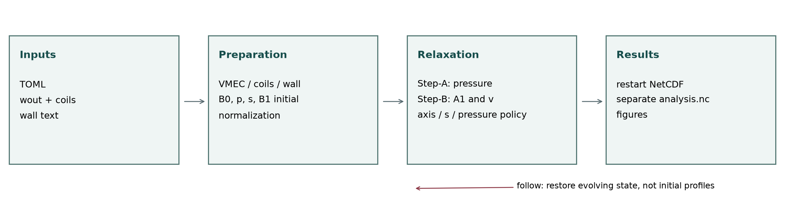
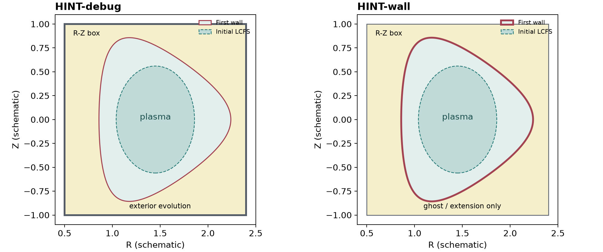

阅读入口
本手册面向本仓库的 HINT-debug 1.3.0 / HINT-wall 1.3.0 Python 实现。它不是原始 Fortran HINT 的逐参数翻译，也不把历史修复记录当作当前行为。源码快照和文件校验值见版本清单，章节末的源码链接固定到该快照。
两个版本都从 VMEC、线圈文本 和第一壁文本构建统一数据，使用无磁面假设的磁力线压力松弛和电阻形式磁场松弛，输出一个可续算的 NetCDF。主要区别是磁场/速度约束的位置及对应离散算子。它们不是完整输运程序，也不是时间准确的实验放电模拟器。
| 选择 | HINT-debug | HINT-wall |
|---|---|---|
| 磁场与速度边界 | R–Z 矩形计算域 | 用户提供的第一壁 |
| 第一壁之外 | 至矩形边界仍演化 A₁、v；压力/电流源受壁限制 | 仅为几何/差分延拓，不作为外部演化区域 |
| 外部电阻率 | solver.step_b.eta1 |
不接受 eta1 |
| 每个 RKG 阶段 | 矩形切向矢势增量闭合 | 稀疏矢势增量法向旋度迹约束 |
| 壁面 A 增量 CG | 不需要 | 默认上限 512，容差 1e-11 |
| 相同功能 | VMEC/zero 起点、压力策略、TOML、NetCDF、CPU/GPU、JAX、MPI、后处理 | 同左，但离散边界成本不同 |
选用依据：要比较原版矩形边界逻辑，选 debug；要研究静止理想第一壁法向磁通冻结的平衡，选 wall。二者都不能不加说明地称为“无限空间自由边界”或“电阻壁模型”。
导读
- 首次运行：安装 → 输入几何 → 初始化与续算 → 主程序参数。
- 检查物理：方程与归一化 → 源项和 s → Step-A/B → 边界 → 收敛诊断。
- 查看结果：NetCDF 与 IPO → 后处理参数 → Python 绘图接口与变量表。
- 开发维护：加速与资源 → 验证与局限 → 源码地图和文档重建。
“默认值”均指当前配置类的默认值，不是推荐网格或可直接运行的算例。nr=0、空路径、轴位置 R=0 等占位值会在 initial 合法性检查时被拒绝。示例 TOML 仍需真实输入文件和几何。
本网站公开访问，也可离线阅读；不依赖在线脚本或字体，数学公式已转换为本地 HTML/MathML。源码仓库仍为私有，源码链接仅对获授权的 GitHub 用户可用。结果档案另见 NCSX 第 100 步结果浏览器。
一次计算的数据流

图为程序逻辑示意，不是性能占比或实验装置图。follow 直接从统一结果恢复状态，不重新用初始化数据覆盖演化后的 s、压力或响应场。
安装与运行
环境与安装
Python 3.11 或更新版本；当前依赖下限包含 NumPy 2、SciPy 1.14、netCDF4 1.7.2、JAX 0.5、threadpoolctl 3.5。实际解析结果取决于平台。MPI 的系统库/启动器以及 CUDA 驱动不是 pip 自动配置的集群资源。
git clone git@github.com:Yihui-L/HINT-docs.git
cd HINT-docs
python3 -m venv .venv
source .venv/bin/activate
python -m pip install --upgrade pip
python -m pip install './HINT-debug[plots,distributed]'
# 另一版本：python -m pip install './HINT-wall[plots,distributed]'
GPU 路径按驱动兼容性选择包内 extra，例如 ./HINT-debug[jax-cuda12,plots,distributed] 或 jax-cuda13。native/gpu 使用 gpu-cuda11 / gpu-cuda12 的 CuPy 路径，不要同时安装多个互相冲突的 CuPy CUDA 包。内置 VMEC 响应场算法不需要额外安装 virtual-casing，也不再提供空的 vmec extra。
私有仓库需使用用户自己的 GitHub SSH key 或授权凭据；不要把口令、token 写进 TOML、Notebook 或脚本。多节点运行要求每个节点看到一致的代码、环境和输入路径。
最小文件隔离
work/
source/HINT-docs/ # 源码
environments/ # 虚拟环境，可在其他位置
cases/ncsx/
main.toml
follow.toml
post.toml
inputs/wout_case.nc
inputs/coils_case.txt
inputs/vessel.txt
run/ # 结果、日志
figures/ # PNG，不混入源码
相对路径以 TOML 文件所在目录 为基准，不以当前 shell 的工作目录为基准。安装成功不意味着输入几何通过校验。
主程序和后处理
hint-debug main.toml
hint-debug follow.toml
hint-debug-post post.toml
# wall 对应 hint-wall / hint-wall-post
没有 Slurm 时可以使用 shell 后台或 screen/tmux。以下启动命令只运行一次，不包含自动重启策略：
nohup hint-debug main.toml > run/main.log 2>&1 &
echo $! > run/main.pid
tail -f run/main.log
停止前确认 PID 对应本次任务。若有 MPI 子进程，按作业/进程组管理，而不是只杀一个任意 Python 进程。不要同时对同一个结果启动 initial、follow 或写入后处理。
MPI 示例：mpiexec -n 4 hint-debug main.toml。这只演示启动语法，不代表四个 rank 对任意 GPU/网格都更快。GPU 必须合理绑定设备；多节点由启动器/调度系统分配主机，程序不会自行申请资源。
推荐准备顺序
- 确认 wout 的 nfp、对称性、自由边界平衡及物理剖面，保留其生成信息。
- 核对线圈周期/对称性、闭合点序、带符号总电流和参考电流密度。
- 准备严格包围初始 LCFS 的真实壁，并使矩形域留足壁外网格余量。
- 选 debug/wall、zero/vmec、scale_after，再设网格、时间步和保存策略。
- 阅读启动诊断：几何残差、背景场限幅/散度、VMEC 响应场投影修正和边界误差。
- 按完整 checkpoint 评估力、速度、散度和轴闭合，不仅看日志是否继续输出。
文档内提供debug 示例目录和wall 示例目录的源码原样副本。它们不是包含 wout/coils 的自足 benchmark。
物理模型与归一化
哪些量在演化
采用柱坐标 (R,φ,Z)，网格数组轴序为 (R,Z,φ)，矢量分量顺序为 (R,φ,Z)。两者不能混淆。B₀ 是线圈背景场，B₁ 是全部等离子体响应场：
本章未特别标 SI 的方程均为程序归一化形式，因而安培定律没有 μ₀。SI 电流为 curl(B₁)/μ₀。响应场包含 VMEC 初始响应场及其后续变化，不仅指“相对 VMEC 的新增量”。
稳态目标是静态 MHD 力平衡、压力沿磁力线一致、磁场无散：
程序将它们分为两种松弛：Step-A 沿磁力线平均压力；Step-B 固定该次压力，推进速度和响应矢势 A₁，磁场始终由旋度导出。
C 是数值松弛预条件系数；ν 是黏性；η 是电阻形式的松弛系数；矢势采用时间规范（电标势为零），没有额外的 divB 扩散项。对该式取旋度即原感应方程；它不是每一步从 B 重新求 A。Jnet 是维持环向电流的外加平行电流目标，不是另一个应与 J₁ 相加的真实等离子体电流。
模型中没有完整密度连续方程、温度/能量输运方程、速度对流惯性项、旋转平衡驱动、可演化外部线圈电流或有限电阻壁电流方程。因此输出 v 是松弛速度；“几秒弛豫时间”不能直接解释为真实装置的输运时间。
归一化标度
当前代码取 L_ref=(R_min+R_max)/2，B_ref 为准备后的 B₀ 在网格中央索引 ((nr-1)//2,(nz-1)//2,0) 的模，密度参考值固定为 1 kg/m³。B_ref 不是磁轴场强。当前线圈有限截面模型不再使用场强限幅。
| 数量 | 归一化量乘此标度得到 SI |
|---|---|
| 坐标、弧长 | L_ref，m |
| 时间 | t_ref，s；仍为弛豫时间 |
| A | B_ref L_ref，T·m |
| B / v / p | B_ref / v_ref / p_ref |
| J | B_ref/(μ₀ L_ref)，A/m² |
| 力密度 | B_ref²/(μ₀ L_ref)，N/m³ |
| div B | B_ref/L_ref，T/m |
| 电阻率 | μ₀ L_ref v_ref，Ω·m |
| 运动黏性 | L_ref v_ref，m²/s |
| 体积分能量 | B_ref² L_ref³/μ₀，J |
归一化 η=0.001 不是 0.001 Ω·m。原版日志、Step-B 存储诊断和后处理 SI 数据必须先对齐标度与统计区域，才可比较数量级。
哪些约束“天然满足”
| 关系 | 当前实现 | 仍需注意 |
|---|---|---|
| B=B₀+B₁ | 直接代数定义 | A₀固定，B₀由同一旋度导出；不能事后限幅或覆盖 B 分量 |
| J₁=curl B₁ | 由离散旋度计算，无独立 J 演化 | 安培关系成立不意味着电流足够准确；导数放大误差 |
| div(curl)=0 | 共同张量差分（含单边端点行）在全部节点保持到舍入误差 | 只对 A 增量施加壁约束；不能对派生 B 再掩膜/外推 |
| B·grad p=0 | 有限长度双向平均近似 | 开放线、随机区、积分误差、压力壁闭合不保证精确为零 |
| J₁×B=grad p | 需要实际松弛收敛 | 黏性、滤波、轴压反馈、固定边界可能留下残差 |
| v→0 | 是有意义的静态验收目标 | 不能仅凭速度变化小判断已经 v=0；非零稳态可能由残余力和耗散平衡 |
scale_after=false 去掉一项外部压力反馈，但不新增能量守恒或保证所有例子最终静止。磁拓扑、源电流、边界和稳定性仍决定能否达到静态平衡。
源码：归一化、Step-B、差分算子。理论背景为 Suzuki 2006 / 2017；当前实现包含另外的离散修复与边界约束，不宣称是论文每个选项的完整复现。
VMEC、线圈与第一壁
wout 的角色
VMEC 用嵌套磁通面坐标表达平衡。本程序从 wout 读取傅里叶几何、nfp、对称性、压力、电流信息，并将它们转换到柱坐标网格；HINT 后续不再要求这些磁面保持存在。
几何使用 cos/sin 傅里叶展开；非仿星器对称平衡保留相应非对称系数。VMEC 半网格磁场系数在径向插值时排除轴上占位项，奇 m 模按 sqrt(s) 的轴正则性处理。径向插值使用程序封装的插值策略，几何角向导数由傅里叶展开解析计算，不用随意差分 wout 表格。
VMEC 逆变基矢场转换到物理柱坐标分量：
这就是不能只用某个面的 dI/ds 推出该面所有点电流矢量的原因：还需要三维几何、完整平衡场及其导数。
压力源采用 wout presf 表；lambda 源采用 jdotb/bdotb，不把 ac 多项式直接当作局部电流密度。VMEC 中用于直磁力线坐标的 λ 与本程序平行电流形状 λ 同名但物理含义不同。
线圈文本与全装置补全
新 initial 输入弃用 mgrid；paths.coils 提供 .txt/.dat 文本，头三行为 HINT_COILS 1、nfp N、stellarator_symmetric true/false，不使用等号。随后每块为 coil 名称 总电流_A stellarator/periodic/updown/none、多行 XYZ 米制坐标、end。闭合曲线至少八个独立点，末点重复首点。正电流沿点序方向，负电流反向。
每条线圈可独立选择三种对称生成规则：stellarator 同时补全仿星器伙伴和场周期旋转，periodic 仅补全场周期旋转，updown 仅做 (x,y,z)->(x,y,-z) 且保持点序和电流符号不变，不做环向复制。典型 PF 线圈是完整环向圆环，本身轴对称，因此“不做环向复制”不等于破坏场周期性。none 表示所有实例已经显式提供。无论哪种规则，补全后的完整电流集合仍须满足文件声明的全局周期性和仿星器对称性；不能把任意不具周期性的线圈放进单周期计算域。
stellarator 表示半周期代表线圈，先按 (x,y,z)->(x,-y,-z) 且 I 变号生成镜像，再旋转补全所有 nfp 周期。periodic 只旋转，none 不复制；后两种覆盖方式必须在补全后仍满足整个装置的对称性。自对称复制只计一次，不同输入块生成同一物理线圈则报错。提供的是整条闭合线圈，不是裁切到半周期的开弧。线圈、壁、wout 的周期和对称性必须一致。
文件电流是该曲线代表的总有效电流，不再额外乘匝数、电流组倍率、场周期数或全局 scale。完整格式见 线圈协议。
平滑核心与无散磁场
vacuum.current_density_a_mm2 是必填的模型电流密度，不是超导材料 Jc。由每个非零电流计算
当前使用近似的平滑核心线圈模型，不再对均匀硬边界圆截面做昂贵体积分：
A(x) = mu0/(4*pi) sum I integral dl'/sqrt(|x-x'|^2+a^2)
a = sqrt(abs(I)/(pi*J_ref*1e6))
局部无限长直导线极限下，J(rho)=Ia²/[pi(rho²+a²)²]，中心密度绝对值为 J_ref，总电流仍为 I；a 是平滑核心尺度，不是工程截面半径。场在核心内有限，远离核心恢复丝状场。每段 A 与其解析 curl(B) 均使用解析积分；周期样条中心线逐级细分，通过 A 和 B 的变化检验精度。全体线圈段共同批处理，不再逐线圈做近场修正。该近似由源模型明确给出，不对最终磁场逐点限幅。模型误差、中心线离散误差和 HINT 网格插值误差需区分，严格无散并不能保证磁面完全正确。
网格取 B0=curl_h(A0)，使用与 HINT 四阶散度配套的差分；离网格取周期五次矢势样条的解析旋度。两种散度分别检验，同时比较独立源积分导数得到的场值，不能用无散恒等式代替物理保真检验。壁只选择诊断范围，不参与真空场加权、裁剪或边界投影。quadrature_tolerance 默认 1e-5，不等于插值误差或散度阈值。
壁文本协议
所有壁信息在一个文本中，当前主程序不要求用户先生成壁 NetCDF：
HINT_WALL 1
nfp = 3
stellarator_symmetric = true
toroidal_planes = 4
poloidal_points = 64
DATA
# 每行 phi_rad R_m Z_m；此处仅说明布局，不是完整壁数据
DATA 后必须有 toroidal_planes*poloidal_points 行，按平面优先排列。同一平面所有行的 φ 相同；R>0，数值有限，使用 e/E 浮点指数而不是 Fortran D 指数。支持 # 注释和空行。不要把注释布局示意当作完整可运行壁。
| 壁类型 | φ 数据范围 | 端点处理 |
|---|---|---|
| 轴对称 2D | 单平面，φ=0 | 一个闭合 R–Z 轮廓 |
| 仿星器对称 3D | 0 到 π/nfp，均匀，至少 4 平面 | 包含两端，端面对称一致；内部补为一场周期 |
| 非对称 3D | 0 到 2π/nfp，均匀，至少 6 平面 | 包含末端且与首端逐点闭合，内部去掉重复平面 |
极向每平面至少 4 点，不重复首点作为末点；各平面对应点需表示同一极向序列，方向一致。建议角度保留约 17 位有效数字。壁 nfp 必须等于 wout，壁对称性必须等于 not lasym，不能由文件名猜测。
主程序检查 LCFS 严格在壁内、壁严格在矩形域内，并要求壁外至少配置的网格层余量。壁几何生成 signed distance（正值在内）、外法向、有效掩膜，写入统一结果。即使 debug 的磁边界在矩形上，真实壁仍参与压力、源项支撑区域和后处理可用区。
压力、电流源与 s 标签
压力不是固定的三维源场
初始 p(s) 来自 VMEC（或 input 的同样升幂/分段线性定义），在柱坐标网格赋值。之后 Step-A 沿当前磁力线松弛压力，s 也根据当前压力和磁场重建。因此最终同一空间点的压力、s 和电流源都不必等于初始 VMEC 值。
profiles.pressure_scale 是准备阶段的倍率；solver.scale_after 决定攀升后是否保留轴压反馈；输出 pressure_scale 是记录的攀升进度。三者不相同。
zero 起点
B₁=0、v=0。初始压力是整个目标剖面的缩小版本。小压力尺度由真空磁轴处 beta=10⁻³ 对应的压力与目标值取较小者：
当 a₀>0 且小于 1 时，每个外迭代的目标比例按几何因子 a₀^(−1/N) 提高，N=pressure_ramp_iterations，到达 1 后停止攀升。初始和随后反馈以插值的当前磁轴压力为依据作统一倍率修正。零目标压力的退化情形不应用这个比例公式直接相除。
攀升改变整体幅度，不把每个网格的 p 强行重置回初始 VMEC p(s)。在变化后的磁结构、标签分布下，压力形状会继续变化。只保证执行所选的轴压反馈，不保证每一个原磁面的 p 值或全空间单调性。
vmec 起点
start_point="vmec" 要求 profiles.source="vmec"、profiles.pressure_scale=1。初始直接使用完整 VMEC 压力和重建的等离子体响应场，v=0，不再将初始压力缩小。pressure_ramp_iterations 在物理流程中不起作用。
scale_after=true：从后续完整外迭代起，仍把当前轴压统一反馈到目标值。scale_after=false：不再施加目标轴压反馈，压力由现有 Step-A/B 和边界流程继续演化。
false 不会取消每步的磁轴定位，也不会停止 s 重建；它不是切换为完整绝热/等温输运方程。原 VMEC p(0) 与离散网格最大 p 未必精确重合。
电流源的实际定义
wout 的 jdotb/bdotb 给出上述形状；该比值在 SI 下量纲 A/(m²·T)。在本程序中其整体幅度由 ctor 再归一化，输入形状的共同倍数会消去。input.current 用相同的 lambda 形状，不是 jcurv，也不是 I(s) 或 dI/ds。这比“所有 VMEC ac 与 HINT input 完全同义”更严格：这里只共享升幂多项式的数学表示，因变量须按 lambda 定义转换。
每个 Step-B RKG 阶段根据当前 B、冻结于本次 Step-B 的 s，在壁内 0≤s<1 建立源项并按 φ=0 截面总电流调整幅度 α_J（不是磁矢势 A）：
该积分是环向电流穿过 R–Z 截面的通量，没有 R 权重或 2π 因子。分母严重正负抵消时不能安全归一化，代码拒绝近退化归一化。源电流不乘压力攀升比例。
电阻项是 η(J₁−Jnet)，体现维持平行净电流的驱动。J₁由完整响应场的旋度决定，还包含力平衡所需的横向/其他电流成分。不能据此认为 J₁在每点完整地趋于 Jnet，也不能把 Jnet+J₁作为总等离子体电流。
演化中的 s 如何定义
初始 norm_s_initial 是 VMEC 归一化环向磁通。演化的 s 是压力排序所重建的标签，不需要预先识别每一张闭合磁面：
- 在 φ=0 截面、壁内且排除矩形两层差分保护节点，选 501 个压力层，范围为 0.01 p_axis 到 p_axis。
- 对每个压力阈值 p_k，积分满足 p≥p_k 的区域内的 Bφ dR dZ，得到包围该高压区域的环向磁通标签。
- 以最低压力层包围的磁通归一化，轴端设 0、边端设 1，施加单调累积约束。
- 通过压力到标签的插值给三维点赋 s；低于压力底层取 1，高于轴压取 0。
实现采用排序、累积和及二分索引，避免对每个压力层重复扫描全域。0.01 乘的是压力底层阈值，不是 s=1 处磁场的倍率。它沿用模型的低压边界标签约定。
在磁岛、随机区或压力平台，s 不再是唯一、严格的磁通面坐标。图上的 rho=sqrt(s) 也只是该标签的变换，不是独立几何小半径。保存态中的 s 应作为后处理和 follow 的依据，不能用 norm_s_initial 覆盖。
VMEC 响应场与续算
VMEC 初始响应场不是简单相减
直接将 wout 内部场减去 B₀，只在 VMEC 内部可定义；无法给出壁和矩形域附近的整个响应场，也可能混入背景场不一致。当前实现使用内置的正则化 virtual-casing 边界积分，从 LCFS 完整场和几何求等离子体电流在内外区域产生的场。
积分源展开覆盖完整 2π 装置，目标点只在一个场周期取样。即使使用仿星器对称性减少目标点，也不能省略其余周期的源贡献。外部 hiddenSymmetries/virtual-casing 是方法参考，不是运行依赖。
定义 r=x−y，外向面积矢量 dS，核心积分为：
近表面采用局部常矢量 C 的减法正则化，结合常场内外/主值跳跃关系恢复解。外点为 V[B−C]，内点为 V[B−C]−C+B_VMEC(x)，表面按主值处理。使用成对 16×16 / 24×24 Gauss 面板误差估计与自适应细分；这些是当前内部精度控制，不是用户可填的 TOML 参数，也不是对全局物理误差的保证。
直接积分初始矢势
当前不使用“响应 B → 逆求 A”路径。对满足 curl A_v=B_VMEC 的内部矢势，使用广义 virtual-casing 恒等式直接计算：
其中 V 是上面定义的通用矢量核，表面使用半跳跃极限。该表达式等于物理电流的体积分矢势加一个纯梯度规范项；不是只使用表面电流单层势。后者单独使用不能恢复 LCFS 内部的等离子体场。原理参考 Hanson 的广义恒等式。
内部 A 从 wout 的 phipf、chipf、signgs 与角变换 lmns/lmnc 构造，而不是反演 HINT 网格上的 B。基础式为 A_v=psi grad(theta)−chi grad(phi)−psi' lambda_ang grad(s)，再作径向规范变换。这里 lambda_ang 是 VMEC 角坐标变换，不是电流源项的 lambda(s)。几何和角变换采用保留原节点系数的 C4 五次径向插值；bsup 参考数据保留独立的轴正则插值。
为降低强规范梯度的离散误差，星形 R-Z 截面可使用物理径向同伦规范，路径与表面表格均检查积分/插值收敛；不能构造有效参考中心时保留一般磁通坐标规范。LCFS 上附加纯标量梯度改善矢势导数连续性，不改变连续磁场。规范平滑不能替代实际 B 精度检查。MPI 分配目标块和规范表格，JAX CPU/GPU 批量计算，环向 Fourier 因子在路径批次内复用。
路径积分自动加密
1.3.1 起，复合16点高斯路径求积从64个节点开始，对未收敛目标逐次加倍，资源保护上限为65536。旧的2048节点不再触发提前退出。保持原判据 |A_N-A_(N/2)| <= 2e-7*A_reference，不放宽容差、不调整源场、不改变HINT网格。此差值是收敛估计而非真实误差证明；真正达到上限仍不收敛时报告最大变化、阈值和最差点的s/theta/phi。NaN/Inf不能被视为通过。
高节点数时自动缩小目标批次，少量剩余路径只填充至相邻的2次幂批大小；边界规范的自动微分也使用更小的批次。JAX CPU/GPU核继续批量执行，MPI仅在各自目标内细化，局部不等长循环没有新增集合通信。规范参考点的全局判据则使用集合计算保持各rank一致。没有新增TOML参数，也没有改动Step-A/B、边界条件或follow状态。
以独立读取 wout bsup 的直接 B virtual-casing 积分为参考，在最多640个分层网格点及256个非网格点分别校验 curl A：平均矢量误差/参考平均场强不超过1%，最大矢量误差/参考平均场强不超过5%。这是抽样保护，不是全网格精度认证。超限时检查数据、规范正则性和网格/积分收敛，不调电流、不放宽阈值。另检验磁通/角变换重建 B 与 bsup B 的一致性。散度很小不能证明场值、磁面或电流准确。
从此以后直接推进节点 A₁。Step-A、磁轴、庞加莱与后处理使用同一 C2 五次 Hermite 矢势的解析 curl，不再每外步逆拟合 B。A₀直接来自平滑核心线圈解析积分，且不进入响应场边界条件。
zero 初始化 A₁=0；vmec 初始化完整 A₁、p 和 s。两版冻结最终准备得到的初始响应场法向值：不可在进入演化时再次把非零初始 B₁n 改成零。洛伦兹力始终使用完整 J₁×(B₀+B₁)。
follow 读取顺序
paths.output_file 同时是恢复源和追加目标。schema 9 的 A 状态文件保存了预处理数据、归一化、完整状态、初始响应场边界参考、压力攀升阶段和每记录求解配置。
恢复时使用最后一个 record_complete=1 的状态，跳过未完成写入记录；加载实际 p、s、v、A₁和轴热启动，并从 A 推导 B。初始 VMEC 标签和初始压力不会覆盖它们。outer_steps=N 表示再做 N 步，而非跑到编号 N。
[paths]
output_file = "run/equilibrium.nc"
[solver]
mode = "follow"
backend = "gpu"
engine = "jax"
outer_steps = 20
save_every = 1
上例省略了外部 wout、线圈文本、vessel。只对被明确继承的设置可以省略：Step-A/B 参数、轴位置/容差、scale_after 等从保存配置恢复；起点语义不可冲突。backend、engine、追加步数、保存策略属于本次调用设置，不能假定所有参数都自动继承。
主程序与后处理仅接受当前 schema 9 的 A-state 文件。旧 schema 4–8、B-only 文件均拒绝，不提供自动升级；需要建立新的 initial 算例。debug 与 wall 的 schema 标识及边界含义不同，不支持把同一个输出当作另一版本的 follow 文件。
写入与并发
主程序先写数组、同步，再提交完整标记；这能识别部分写入，不等价于任意并发读取均安全。重要结果先备份；监控正在写的文件时优先使用安全副本，并检查最后完整记录。后处理写独立文件且有写锁，不要自行删除一个仍有进程持有的锁。
外迭代与数值方法
一次完整外迭代
| 顺序 | 更新内容 | 冻结/依赖关系 |
|---|---|---|
| 1 | 边界闭合、压力有效域 | 由当前 A₁导出 B₁，闭合 v、p；不覆盖 B |
| 2：Step-A | 沿当前 B 的双向磁力线平均 p | B 固定；不重新读取初始压力剖面 |
| 3 | 定位该场磁轴、测量松弛后轴压 | 热启动，但不能把旧轴直接当成新轴 |
| 4 | 由 p 和 B 重建 s | 压力排序/磁通积分 |
| 5：Step-B | inner_steps 次 RKG，推进 A₁、v | 本次 p 和 s 固定；J₁/B/Jnet 随 RKG 阶段变化 |
| 6 | 在更新后的 B 中再次跟踪轴 | scale_after=false 也执行 |
| 7 | 按攀升/维持策略统一缩放 p（若应执行） | 不恢复旧 s；false 且已完成攀升则不缩放 |
| 8 | 保存完整状态及可用诊断 | 内部诊断和结束反馈后的状态时刻不同 |
Step-A 双向平均
两个方向独立追踪；出壁/失败方向贡献零，另一个方向仍保留其自身平均。不是把两方向积分的分子分母分别相加再求比值。若两侧积分权重不同，这两种离散平均并不等价。
沿线快速压力均衡是模型假设，有限追踪长度、开放线处理、权重及积分误差共同决定近似质量。JAX 路径使用自适应 Dormand–Prince 5 和 FSAL，native CPU 使用 SciPy DOP853。试探步越壁时先缩步重试以区分真实穿壁和粗步越界；最终失败需结合诊断解读，不伪造一条闭合线。
空间差分
内域一阶/二阶导数采用四阶五点中心模板：
φ 周期环绕；A 的 R/Z 端点使用四阶单边导数，混合导数保持可交换；速度/压力另用相应 ghost 闭合。柱坐标散度按守恒组合：
旋度的 R/φ/Z 分量分别为 Dphi(BZ)/R−DZ(Bphi)、DZ(BR)−DR(BZ)、DR(RBphi)/R−Dphi(BR)/R。速度黏性采用柱坐标矢量拉普拉斯，包含曲率和分量交叉项，不能对三个分量简单套笛卡尔标量拉普拉斯。
规则内域四阶并不等于三维扭曲壁附近整体四阶；壁的距离、法向、插值和 ghost 延拓另有误差。
离网格插值及其检验
所有新 A 状态中的磁场均来自同一 C2 张量五次 Hermite 矢势。插值的是 (A_R,R A_phi,A_Z)，包含柱坐标度量；B 由解析旋度获得。共享节点值、一阶与二阶导数，导数使用演化中的相同四阶模板，因此节点处解析 curl 与 curl_h 一致，跨单元 A 为 C2、B 为 C1。
这同时解决网格散度与连续插值散度的约束，不意味着 B 或 J 本身没有截断误差。测试另外用实际磁场的 JAX Jacobian 验证连续散度，不能用返回常数零代替。构造总场插值器只需合并 A₀+A₁和本地模板表，无每外步全局 B→A 逆问题。
Step-A 的 p 仍为四点张量插值，取样时裁去负值；输出 p/s 线性插值并施加原范围限制。壁 signed distance 为周期线性插值；v 没有不可压约束，不套磁场的保散度条件。当前后处理直接读取 A，不保留旧 B-only 文件的逆拟合路径。详细公式见“离散系统、插值与一致性”。
Step-B 时间推进
使用四阶段低存储 Runge–Kutta–Gill。对 u=(v,A₁)，每阶段先计算 δu=Δτ·RHS(u)，然后：
| 阶段 | c₀ | c₁ | c₂ | c₃ |
|---|---|---|---|---|
| 1 | 1/2 | 0 | 0 | 1 |
| 2 | 1−√(1/2) | −1 | 1−3c₀ | 2c₀ |
| 3 | 1+√(1/2) | −1 | 1−3c₀ | 2c₀ |
| 4 | 1/6 | −2 | 0 | 0 |
每阶段对 dA₁/dt 施加相容边界，再由 A 的旋度计算 B；不对 B 事后修补。此形式推进的是人工松弛方程；压力分裂、滤波、投影和边界闭合使得“RKG 四阶”不能直接推导整套外迭代的四阶时间误差。
预条件和滤波
C 的场因子是 min(1,(Bcrit/|B₀|)²)；电流指标来自 curl(B₀)，小于 j_low 因子为 1，大于 j_high 为 0.1，中间线性过渡。合成后执行配置的邻域平滑。它不是对 Jnet 或 J₁ 作削顶。
速度滤波针对相对参考场的增量，五点邻域值为 (−f[-2]+4f[-1]+4f[+1]−f[+2])/6，以 mfil=0.375 混合。reference_every 只是更新滤波参考，不将 v 清零。它仍是一种数值耗散，不能因删除了旧 nvreset 就视为速度完全没有额外处理。
当前时间步固定，无通用自适应 CFL 控制。增大 inner_steps 延长松弛区间，不会修复过大 time_step 导致的不稳定。细化网格后，显式扩散约束通常更严格。
两种边界与矢势约束

图为定性 R–Z 截面。两版共同约定：线圈背景 B₀ 已穿透壁且固定，只有响应场受边界约束。
zero 初始法向响应为零；vmec 保留准备完成的非零分布。用 F=∂A₁/∂t 表示更新，只约束 F，不把完整 A 或 curl(A) 重置。时间规范下 F=−E；冻结 B₁n 是法拉第定律给出的磁通约束，不等于要求总 Bn=0。模型没有有限电阻壁电流方程，也不是真空开放边界匹配问题。
debug：矩形边界
R/Z 两层保护节点上的 F 切向分量为零，因而 curl_h(F) 的法向分量为零；速度为零，phi 周期。B₁由 A₁导出后不再独立外推切向 B。物理冻结法向条件保留，但旧 B 表示的独立保护层闭合被 A 闭合替代。
第一壁仅截断磁力线并界定压力/源电流支持。壁外到矩形边界仍演化 A₁和 v；eta1=0 表示继承 eta0，eta1 不同于 eta0 时保留原十次 R/Z 平滑。这不是无质量真空 Maxwell 外域。矩形域过近仍会影响平衡，不能由“与原版边界原理一致”推出无限空间自由边界结果。
wall：三维第一壁
物理更新只在第一壁内；壁外 A 值仅作导数与插值的数值支持，不代表壁外 MHD 演化。先用原感应通量 ghost 延拓，然后在 signed-distance 的网格边零交叉处约束同一 Hermite 解析旋度的法向增量。
以 L 表示这些离散壁点处的法向 curl 迹，每行按其范数归一化：
这是节点 A 增量的最小欧氏范数边界修正，只改变壁迹支撑中的节点；不是对 B 的全体积投影，也不是修改 B₀或新增物理电流。稀疏 CG 每个 RKG 阶段执行，默认上限 512、残差容差 1e-11；不满足接受标准则拒绝区间。
精度边界：冻结法向条件在这些配点处满足代数容差，不代表在精确 CAD 壁面每一点都精确满足。signed-distance 几何、法向和点间迹仍有空间误差。ghost 前处理沿用原电边界，末尾约束保证其冻结磁通结果；不能据此宣称投影后连续切向电场处处严格为零。边界敏感的定量结果仍需几何/网格加密验证。
磁场散度
两版都以共享张量算子的恒等式 D_h curl_h(A)=0 保持节点无散。连续插值采用同一个 A 的解析 curl。新版演化删除旧 divB 扩散与 B 状态投影参数；不可把新壁面 CG 容差当成磁场散度容差。
加速、并行与资源
执行组合
| engine / backend | Step-A | Step-B | 使用条件 |
|---|---|---|---|
| jax / cpu | JIT 批量自适应 DOPRI5 | JIT RKG/差分 | 默认；启用 float64 |
| jax / gpu | GPU 批量磁力线 | GPU JIT，减少主机往返 | 安装兼容 JAX CUDA extra |
| native / cpu | SciPy DOP853 | NumPy/SciPy | 对照与调试路径 |
| native / gpu | 仍为 CPU 磁力线 | CuPy | 不代表全部阶段上 GPU |
JAX/native 的积分器不同，因此差异不只有浮点加法顺序；应按容差与离散误差进行比较，不要求逐位相同。两者仍应实现相同物理方程和边界含义。
各环节的实际加速
| 环节 | 已实现 | 仍可能成为瓶颈 |
|---|---|---|
| VMEC/壁预处理 | 向量化、共享插值、线程库、可分配几何任务 | 非线性反解、几何判断及根进程工作 |
| 平滑核心线圈 A₀ | 解析线段积分、全线圈共享批次、MPI 目标分块、GPU JAX/CPU 线程 | 首次 JIT、目标数×线段数、数据传输 |
| 初始 casing 场 | 全周期源缓存、批量目标、JAX CPU/GPU、MPI 分块 | 近边界自适应面板、CPU 控制、内存带宽 |
| 初始响应 A | 广义 virtual-casing 直接积分，MPI 目标块/规范表格，JAX CPU/GPU 路径及面板批次 | CPU 自适应控制、全局归约、O(N) 节点 curl |
| Step-A | FSAL、自适应批处理、MPI 起点分配、设备并行；统一解析 curl(A₀+A₁)，p 独立四阶取样；精确源场缓存与编译算子缓存 | 长/短磁力线负载不均，壁附近退步；局部 7³ Hermite 取样与数据传输仍有成本，但无每外步全局逆拟合 |
| Step-B | JIT 内循环、低存储 RKG、缓冲复用、分片通信 | wall 每阶段约束求解与通信 |
| s 标签 | 排序和累积和代替层数×网格全扫描 | 根进程统计/广播 |
| 磁轴 | 热启动、共享场插值 | 周期固定点仍有串行部分 |
| NetCDF | 根进程写、可调保存/压缩频率 | 压缩、网络文件系统与完整 3D 场体量 |
| 数值后处理 | JAX/GPU 采样/导数、MPI 独立种子 | 拓扑判断、磁面求积、根进程写入 |
| Notebook | 可使用 JAX/GPU 数值路径 | Matplotlib CPU；普通调用不自动启动 MPI |
当前程序不是“每一个 Python 循环都 OpenMP 化”。NumPy/BLAS/OpenMP 库线程与 MPI 是不同层次：前者通常共享内存，后者为进程间通信，可跨节点；二者可混合，错误叠加会造成超额线程竞争。
自动分配与约束
程序参考 CPU affinity、cgroup 和调度环境控制线程预算。MPI 主程序多 rank 路径要求 JAX；分片网格根据可分解的 R/Z/φ 维度和设备资源构造，不合适时可能出现多余副本并警告。增加 rank 不保证加速。
GPU 通常按一 rank 一设备绑定，避免多个进程重复抢同一设备。多节点必须由 OpenMPI/MPICH 或调度系统实际启动，pip 安装 mpi4py 不会自己创建跨节点作业。
插值后散度诊断在最多 2048 个确定性探针上批量执行，不逐点启动 Python/JAX 内核。CPU 张量插值对点批量向量化，JAX 在固定形状批次内完成 gather；诊断不进入 Step-B 的每个内步。A₀固定、A₁直接演化；新状态每次只传递当次节点矢势和共享 Hermite 模板，不再全局逆拟合。壁面约束的稀疏矩阵乘/CG 仍可能受通信限制。
多进程 JAX 初始化要求与当前分片实现兼容的常量提升行为。CLI 会设置需要的 JAX_USE_SIMPLIFIED_JAXPR_CONSTANTS=true；自写 Python 入口应在导入 JAX 前设置。源码有能力检查，不应只依据最低依赖版本就假定某个旧 JAX 支持全部多机路径。
后处理 MPI 按种子分配，每个 rank 可能保留整个输入场；不能把它当作自动降低单 rank 内存的域分解。wall 阶段投影和一些全局归约使其并行扩展规律不同于 debug。
性能测量的正确方式
分别记录首次 JIT 编译、VMEC 初始化、每步 Step-A/Step-B、轴/标签处理和 I/O。GPU 异步执行须同步后计时，否则只测到提交开销。总耗时不能简单用 Step-A+Step-B 代替。
1.2.0 删除均匀截面体积分及逐线圈近场修正，改为平滑核心闭合线圈的解析线段积分。所有线圈段合并后批处理，GPU 来源数组常驻，最多两批在途；CPU 目标任务队列有界，限制嵌套线程；MPI 分配目标。这里既有并行实现改进，也有用户授权的源模型简化，不能把新旧源场差异称为纯舍入误差。
1.3.0 进一步取消初始 B→A 逆解，直接从边界积分和内部源矢势得到 A。路径积分复用环向 Fourier 收缩，面板缓存共享、GPU 批量容量随源规模限制；壁/LCFS 包含关系检查使用 MPI 环向分配与 CPU 线程。独立 B 校验直接读取 bsup，不再计算后丢弃昂贵的规范路径 A。日志分别记录规范准备、casing、节点 curl、独立校验耗时。1%平均/5%峰值场保真度保护仍有效；follow 和 Step-A 不重复初始化。
1.3.2 将两个 Gauss 规则和初始误差计算合并为 JAX 核；细分源面片常驻 rank 本地 CPU/GPU，只有缓存缺失时才上传。整数四叉树让同一几何面片只细分一次，目标分组共同进入细化轮次，避免逐目标重复构造浮点坐标元组和大型源数组。CPU/GPU 缓存分别限制为 1024/4096 个面片，GPU 细分积分最多批处理 4096 对目标-面片。MPI 按块优先编号分配，但 rank 内按环向面顺序计算，避免进程数与每面块数相同时的系统性负载偏斜。物理公式、误差求和、8 倍误差估计、安全上限和双精度均未改变。
该设计遵循 JAX 异步调度文档：主机读取设备结果会同步，频繁的小批回传会破坏计算重叠。单块 GPU 的算力和带宽仍有限，不应使用更多进程竞争同一设备。第一壁约束矩阵批量组装、MPI 根进程构建后广播，约束本身未变。后处理取样最多两批在途，避免无限累积设备结果。
这里只报告实际执行的单 GPU / 同机 MPI 验证；不把数据推广为多节点性能保证。OpenMP、MPI、JAX 是不同机制，串行文件写入和少数控制逻辑仍有必要保留。不能牺牲边界约束、积分容差或双精度来制造表面加速。
NetCDF 与 IPO 管理
输入 → 过程 → 输出
| 任务 | 输入 | 输出 | 是否需要外部 wout/coils/壁 |
|---|---|---|---|
| initial | main.toml + wout.nc + coils.txt + 壁文本 | 一个统一 equilibrium.nc + stdout 日志 | 都需要 |
| follow | follow.toml + 已有统一结果 | 向同一文件追加完整状态 | 不需要；使用内嵌准备数据 |
| 数值后处理 CLI | post.toml + 统一结果 | 独立 analysis.nc | 不需要 |
| Notebook 绘图 | 统一结果 + Python 调用 | PNG/PDF/SVG，可取得返回数组 | VMEC 叠加需 wout；不需线圈/壁文本 |
3 个旧预处理程序已整合进 initial。用户不再手工衔接 flx/vac/lim 三个输出，也不再以旧 NAMELIST 作为新版输入。后处理 TOML 配置的是数值分析内容；它不是所有 Notebook 绘图参数的序列化文件。
统一文件 schema 9
两版各有自己的 schema 属性，不能交叉续算。新状态仅保存必要基础量：
/ R, Z, phi, nfp, B_reference, length_reference, density_reference, alfven_time_reference
/preprocess/flux initial norm_s 与来源
/preprocess/profiles 目标压力、lambda、电流幅度
/preprocess/vacuum/A 固定 A0，T m；线圈文本、电流密度、半径、诊断
/preprocess/wall mask、distance、normal、对称性与来源
/preprocess/initial_response_A vmec 初始冻结法向参考 A1，T m
/equilibrium/response_A 每完整记录的实际 A1，T m
/equilibrium/velocity m/s
/equilibrium/pressure Pa
/equilibrium/norm_s 当前演化标签
/equilibrium time、outer_step、攀升状态、轴热启动、配置、完成标记
/equilibrium/stepb_diagnostics 可选内步标量历史
读取时用相同 curl_h 导出 B₀、B₁、总 B 和 J₁，不再逆拟合或用旧磁场 ghost 覆盖结果。A 的归一化标度为 B_ref L_ref。time 是归一化阿尔芬时间；axis_seed_R/Z 是归一化热启动元数据；三维场使用 SI 并不意味着内步标量也自动变成 SI。
写入前校验 A 与内存中的 B 一致，再同步数组并发布完整标志。不完整记录被跳过。A₀与初始 A₁参考只存一次；后者不能用当前 A₁覆盖，否则会改变冻结边界。Hermite 导数表、J、grad(p)、力残差和图像切片可重建，不逐步重复存储。
新主程序 follow 只接受 schema 9 的 A 状态。旧 schema 和 B-only 结果均明确拒绝，不提供格式升级或兼容读取。后处理需稳定结果或安全副本，不承诺正在写入的 HDF5 可任意并发读。
analysis.nc
数值后处理按内容写入独立文件，包含采样几何、壁信息和 /postprocess/<内容>/run_* 结果。重复分析不直接覆盖输入平衡；每次 run 的完整标志和 latest_run 记录用于识别有效结果。追加时检查来源文件与几何一致性，不能把不同算例悄悄混入一个 analysis.nc。
分析文件当前使用 hint_analysis_schema=1，根组含 R、Z、phi、nfp 和 source_equilibrium；壁距离场在 /geometry/wall/signed_distance。它不是主程序 schema 9 checkpoint，不能将 analysis.nc 当作 follow 输入。
fields 的壁外采样约定为 −1；导数量还提供有效节点掩膜。其他结果可使用 NaN/状态码标识失败。统计时必须尊重 mask/status，不能把 −1 当成真实负场强或把失败轨迹当成零旋转变换。
存储成本与安全
单个 3D 标量 double 原始大小约 8*nr*nz*ntor 字节，矢量为三倍；保存 B、v、p、s 每状态约 8 个标量场，还需坐标/元数据/压缩开销。历史文件大小随保存次数增长，压缩率取决于数据，不是固定保证。
用 save_every 控制完整状态间隔、diagnostics_every 控制标量密度；关闭标量存储会丢失内部步历史。不要仅为释放空间删除仍用于 follow 的唯一结果。异地备份应在完整状态或稳定副本上操作。
收敛性与平均方式
先确定量、区域和时刻
同名“RMS”可能不是同一个统计。比较两版本、原版日志或不同图片前，应固定：B₁还是总 B、SI 还是归一化、矩形域还是壁内、是否排除差分无效节点、每内步还是完整保存态、点平均还是体平均。
令有效节点集合为 Ω，柱坐标体元权重 w_i=R_i ΔR ΔZ Δφ：
绝对平均是对 |f| 求平均，有符号平均可能正负抵消；RMS 与最大绝对值则不会。三者不能互换。统计极值不加体积权重。
Step-B 诊断
| 字段 | 定义/解释 |
|---|---|
| kinetic_energy | 归一化体积分 1/2 ∫v² dV |
| response_magnetic_energy | 归一化体积分 1/2 ∫B₁² dV；不是总场能量 |
| force_max / force_rms | F=J₁×B−grad p 的最大模 / 点 RMS，不含黏性和预条件因子 |
| divb_max / divb_rms | div B₁ 最大绝对值 / 点 RMS；不是 div B₀ 或总场 |
| force_volume_rms / divb_volume_rms | 上述量的 R 加权体 RMS |
| parallel_pressure_volume_rms | b·grad p 的体 RMS |
| boundary_bn_max | 相对冻结法向参考的最大边界误差，不是绝对 Bn |
| boundary_velocity_max | 适用边界上的速度模最大值 |
debug 的常规内域诊断排除矩形保护层，包含数值壁外区；wall 在其有效内域统计。因此同网格两版本的诊断范围也可能不同。实际 mask 由相应算子决定。
内部最后一步诊断可能发生在外迭代末尾轴压反馈之前；保存态压力可能已反馈。scale_after=false 不再有该压力倍率，但重新计算导数、掩膜及 SI 换算仍可造成差异。
相对力残差
绘图的局域相对量为：
在分母有效时范围为 [0,2]。两项同时低于相对数值门槛时掩膜，而不是人为给小分母制造很大的比值。它与“所有点绝对残差 RMS 再除全局梯度 RMS”不同：
后一式是另一种可解释的归一化，不能把当前 force_rms 自动称为这个比值。局域相对图在低压真空附近往往无定义，不宜据此说真空不平衡极大。
磁场散度解读
保存态可分别计算 D·B₀、D·B₁、D·(B₀+B₁)。相同线性算子下三者相加关系成立，但插值、掩膜、采样网格改变会影响数值。B₁ 的舍入级散度不能消除 B₀ 的限幅/插值散度。
fields/MAGVAL 类输出用 T/m，其相对最大散度指标还乘特征域尺度再除最大场强；这不是 Step-B 的 B_ref/L_ref 归一化。没有给出离散精度、网格和场梯度时，不存在对所有 mgrid 都必须满足的绝对 10⁻¹⁰ 阈值。
如何判断趋于平衡
同时观察力残差、平行压力梯度、速度/动能、响应能量、散度和边界误差，结合晚期变化趋势。v 变化很小只说明近稳态，不说明 v 已趋零；固定非零流速也可能与残余力/耗散平衡。单一残差小也可能来自压力整体衰减，需一起看轴压/峰值及目标剖面。
对 signed 分量使用线性或 symlog；严格非负且跨数量级量适合 log。包含零或舍入噪声的曲线不要偷偷加偏移量。zero 攀升可在第 N 外迭代画垂线；vmec 无攀升，不应套用“第 20 步攀升结束”标记。
后处理与 Notebook
数值 CLI 按内容分类
后处理读取统一结果，selection.record=-1 默认选择最后完整状态；requested_time 提供时选最近完整时间，不做状态插值。至少启用一个内容。
| TOML 表 | 内容 | 关键限制 |
|---|---|---|
| fields | 场采样、导数与磁场指标 | 壁外 −1；导数有效区需额外掩膜 |
| force_balance | 力平衡、梯度、电流等 | 使用响应电流与当前总场；不是重复读初始源项 |
| magnetic_axis | 当前场磁轴 | 保存轴作热启动，并重新验证闭合 |
| field_lines | 普通弧长磁力线及兼容边界模式 | 线性 R–Z 起点序列 |
| poincare | 周期截面交点 | 一个场周期，不是每步都输出完整环向圈 |
| flux_surfaces | 可解析磁面的积分量 | 散布/积分精度不合格需保留失败状态 |
| boundary_trace | 边界曲线追踪 | 内部固定 mode=vmec；名字不表示调用 VMEC 求解器 |
| convergence | 保存的 Step-B 历史 | 无法恢复没有存储的内部诊断 |
输入只接受 fields/force_balance/field_lines 等当前表名，旧 magval/gprts/hmag 别名已删除。共有 HMAGConfig 中某些参数被内容分支覆盖或不使用，完整参数表逐项说明，不建议把所有公共字段都复制到每个表。
追踪圈数的接口差异：CLI flux_surfaces.surface_circuits 按完整 2π 环向圈计，源码乘 nfp 扩展到场周期；CLI poincare.boundary_points 和 Notebook crossings 按场周期回归计。三个量不能直接等值替换。
Python 绘图入口
from hint_debug_plotting import HintPlots, variable_catalog
plots = HintPlots(
"run/equilibrium.nc", # 稳定结果或安全副本
wout="inputs/wout_case.nc", # 可选；叠加 VMEC 时必需
outer_step=100, # 可省略，使用最后完整状态
backend="cpu", engine="jax",
)
print(variable_catalog())
wall 使用 hint_wall_plotting。outer_step 与 record 不可同时给出；record 是保存记录序号，不是步号。构造对象不会启动主程序，不修改结果。传入的 wout 需同一算例、周期与对称性一致；仅凭 nfp 匹配仍不能替代用户确认正确文件。
二维截面
figure = plots.sections(
"pressure", levels=48, contour_lines=12,
vmec_surfaces=(0, .25, .5, .75, 1),
)
figure.save("figures/pressure.png", dpi=300)
plots.sections("force_residual_relative").save("figures/relative_force.png", dpi=300)
默认截面 φ=0、π/(2nfp)、π/nfp，纵向排列，contourf+contour、统一色标、壁与矩形边界。角度是弧度。非对称算例也保留这一默认值，查看整周期需显式改 angles。LCFS 是初始 VMEC 边界，不是演化后的 s=1 平台。
show_lcfs=true 需 wout；默认叠加 VMEC 磁轴、三张内部面与 LCFS。壁来自保存的距离场零等值线，不要求再次读取壁文本。不存在可比 VMEC 量时不伪造速度/残差参考。
一维剖面和时间曲线
plots.profiles("pressure", coordinate="s", bins=50).save("figures/p_s.png", dpi=300)
plots.profiles("toroidal_current_density", coordinate="R", z_m=0.0)
plots.profiles("field_strength", coordinate="Z", r_m=1.5)
plots.profiles("speed", coordinate="phi", r_m=1.5, z_m=0.0)
plots.time_series(["force_rms", "divb_rms", "kinetic_energy"], scale="auto")
plots.time_series("speed", reduction="mean", scope="wall")
示例 R/Z 位置必须按装置调整。R/Z 剖面是指定物理线上的采样；φ 剖面覆盖一个场周期，不能再同时给 angles。矢量先插值分量再求模/投影，避免把模的插值误当矢量插值。
s/ρ 剖面用保存的演化标签，按截面等面积分箱，显示平均与箱内标准差，不是体平均或严格磁面平均；ρ=sqrt(s)，分箱仍均匀于 s，s=1 外侧桶排除。±标准差不是数值误差棒。点数不足的箱不强行插值补齐。
wout 压力参考用原始 presf；无 wout 时可用内嵌的缩放后目标压力作有限参考。s 图两套曲线分别用自己的标签，不宣称 HINT s 与 VMEC s 为同一磁面；R/Z/φ 参考在相同实空间位置独立反解 VMEC，不外推到 LCFS 外。
toroidal_current_density 是点值 J₁φ，A/m²；toroidal_current 是标签阈值内 ∫J₁φ dR dZ，A。VMEC 对比用其完整场导数/安培环路积分，不把 jcurv 当局部 Jφ，也不为强行匹配 ctor 再缩放曲线。
庞加莱
result = plots.poincare(crossings=256, toroidal_steps=128)
result.save("figures/poincare.png", dpi=300)
可通过 poincare_data 指定种子和更长追踪，再传 data= 重画。有效种子位于第一壁内，不受初始 LCFS 限制；扩大种子范围/加密可显示外侧磁岛，但空白可能是出壁、奇异积分或取样不足，不应人工连接成磁面。启动种子不冒充回归交点。
旋转变换 iota
data = plots.rotational_transform_data(
seed_s=[.02, .1, .2, .4, .6, .8, .95, .99],
crossings=256, toroidal_steps=128,
rtol=1e-8, atol=1e-10,
convergence_tolerance=.002, surface_tolerance=.02,
)
plots.rotational_transform(data=data, coordinate="s")
先在当前磁场定位磁轴，再连续追踪、展开相对磁轴的极向角，计算长程 Δθ/Δφ，并转换到 VMEC 的角向约定。使用密集自适应 RK4 步长加倍，而非仅凭稀疏庞加莱点 unwrap，以免角度混叠。
默认 32 个初始 VMEC s∈[0.02,0.98]，每个 s、每个环向截面用一个 θ=0 起点。是同一条磁力线的长程绕转平均，不是同 s 多起点平均。可加密 seed_s；但随机区里长程绕转存在也不意味着严格磁面存在。
返回有限长度前后半段一致性、角度分辨、表面散布等标志；未通过的有限值用区别标记，失败值掩膜。坐标轴默认 HINT 的起点演化 s/ρ；不能误标为初始 seed_s。独立的 NCSX 结果网站会说明该次加密扫描的特别参数。
输出和变量
各绘图方法返回 PlotResult(figure, axes, data)，.save() 支持 PNG/PDF/SVG；不用图时也可读取 field/section/line/point/temporal。Notebook 不自动创建 analysis.nc。绘图可用变量名、单位和适用功能由源码自动提取在下方变量索引中。
合法性、诊断与局限
运行前应能解释的检查
| 检查 | 应采取的动作 |
|---|---|
| 未知 TOML key / 类型错误 | 修正拼写和类型；布尔值是 true/false，不是字符串或 0/1 |
| nfp / 对称性不一致 | 统一 wout、壁、真空场，不能关闭检查掩盖错配 |
| LCFS 穿壁 / 壁超出矩形域 | 调整真实几何或合理扩大数据/计算范围，不在无数据处外推 |
| 网格/谐波点数不足 | 增加离散点；只满足最小点数不代表分辨率充分 |
| 线圈输入非法 | 检查闭合、对称性、重复轨道和有限截面半径；不得重复乘电流或周期数 |
| 磁轴闭合残差大 | 核对种子、当前磁结构、积分/网格精度；容差放宽不等于问题消失 |
| 初始化A的场值误差大 | 同时检查wout/B₀一致性、规范正则性、网格和近表面积分 |
| Step-B 非有限或快速增大 | 停止把它当健康运行；检查时间步、空间导数、边界、源项和日志 |
| iota/磁面追踪失败 | 保留状态，扩大/改进采样需有物理理由，不强制插值成平滑曲线 |
程序会对部分可改善但不完美的求解给警告和最优有效结果，对非法输入/明显违反约束则拒绝。容错不意味着可以忽略精度诊断，也不应让所有小警告都变成物理失效判断。
本手册的验证范围
1.3.2 检查包括两套CPU完整回归、RTX 5090/JAX float64直接A/路径专项、真实双进程MPICH/JAX回归和静态检查。新增CPU/GPU源面片驻留缓存的复用与淘汰、共享整数面片树、成对积分核非有限值保护及MPI目标分块完整性测试。此前自动路径加密、直接A的内外/表面极限、规范和环面孔洞测试继续保留。未测试多物理节点或OpenMPI专属实现。详见 debug验证报告 与 wall验证报告。
真实NCSX的4096目标点热启动块中，表面积分由15.42秒降到1.48秒，包含内部源A等计算的整块由15.71秒降到1.78秒；两个不同位置块的表面积分由10.11/17.15秒降到1.74/3.19秒。两边均启用cProfile，最大A差约1.8e-16 T·m，积分判据未放宽。这不是完整初始化的加速倍数，也不能替代A到B场值精度校验。日志分别报告几何/源常数、表面积分、内部矢势以及源面片上传量，避免把CPU调度等待误报为GPU积分耗时。
历史真空场基线与当前响应场限制
真实壁、144×144×144 网格、nfp=3、27 条代表线圈补全为78条物理线圈，J_ref=50 A/mm²。该密度为模型假设，不是工程测量值。新平滑核心真空场准备约67.99秒，旧运行相应阶段约1281.22秒；加速包含明确授权的源模型简化，不能只归因于并行。新网格背景场最大值2.68685 T，没有逐点限幅。
| 壁内指标 | 真空场 | 重构响应场（场值保真度未通过） | 总场（仅诊断） |
|---|---|---|---|
| 网格平均归一化散度 | 4.65e-16 | 7.62e-16 | 4.80e-16 |
| 网格最大归一化散度 | 4.80e-15 | 8.97e-15 | 5.44e-15 |
| 独立 JAX 对实际插值器求导：平均 | 3.39e-15 | 2.61e-15 | 3.54e-15 |
| 独立 JAX 求导：最大 | 1.64e-14 | 1.22e-14 | 2.21e-14 |
网格取687944个壁内点，独立求导取64个壁内点；另有1024点解析散度检查。平均定义为 mean(h*abs(divB))/mean(abs(B))，不是有符号平均。独立场值抽样以解析线段 B 为参考：网格平均/最大相对差2.934e-6/1.275e-5，插值后5.101e-7/1.834e-6，均为12个探针，不能代表全域最坏误差。
上述表格是1.2.0诊断，不是当前直接A的验收结果。 原有144³网格的直接A局部检查也未通过场值精度保护，不能只凭散度小认为初始化正确。三个疑难点缩小curl求导步长16倍后，绝对误差由约3.1e-3至5.4e-3 T降至5.2e-6至3.8e-5 T；这是局部点检验，并非整网格加密或完整初始化成功。部分中间加密不单调，仍需同时考虑表格/积分误差。当前运行保护使用独立wout bsup的B积分，均值1%和峰值5%限制未放宽。
1.3.0完整初始化尝试在两个内部矢势路径的2048节点上限处停止，尚未进入B场值校验。1.3.1在GPU上使用正式自适应逻辑，对两个点分别自动细化到4096和8192节点，均通过原有9.963e-8 T·m变化阈值。该结果只证明这一局部积分上限问题已解决，不能替代整个NCSX初始化与演化的验收；运行状态以算例日志为准。
库中的 tests 包含离散算子、边界、重启、源项、I/O、执行后端及后处理契约等回归测试。测试通过只能支持其覆盖的条件；复杂三维物理正确性还需要网格/时间步/边界收敛研究和独立平衡比较。
需要保留的限制
- 新线圈背景场通过配套离散旋度和连续旋度保无散，不再限幅。旧 B-only checkpoint 不再被主程序或后处理接受。
- 网格节点的离散散度与磁力线实际使用的插值后连续散度不是同一数；两者都小才支持“数值无散”，仍不能单独证明场值正确。
- 规则内域高阶差分不保证浸入曲壁整体同阶精度。
- 松弛模型未包含完整能量/质量方程，数值时间和速度不能直接作为实验输运量。
- 压力重建标签不保证严格磁面，不能把所有 s 图当作磁面平均。
- 理想壁冻结初始法向磁通，与有限电阻壁、无限真空边界、真实耗散壁不是一回事。
- VMEC 初始化非零冻结磁通与 zero 初始化边界状态不同；比较结果时要注明。
- 加速能力不等于已验证所有设备和多节点拓扑，资源超额分配可能更慢。
源码地图
| 入口 | 责任 |
|---|---|
| config.py / cli.py | TOML 严格解析、默认值、命令行 |
| pipeline.py / model.py | 准备、归一化、运行选择和状态类型 |
| preprocess/ | VMEC、线圈文本、壁、直接A casing与独立B精度校验 |
| solver/equilibrium.py | 压力策略、轴热启动、外循环 |
| solver/step_a*.py / flux.py | 磁力线平均、演化标签 |
| solver/step_b.py / numerics.py | RKG、差分、源电流、滤波、诊断 |
| solver/box.py（debug） | 矩形边界 |
| vector_potential.py / solver/potential_boundary.py | 相容节点/连续旋度、稀疏法向旋度迹约束 |
| solver/wall.py（wall） | 压力、速度与感应通量 ghost 延拓 |
| parallel.py / backend.py | 线程预算、MPI/JAX、CPU/GPU |
| storage.py / postprocess/analysis_store.py | 主结果和分析文件事务标记 |
| postprocess/ 与可安装 plotting 包 | 数值后处理、变量/绘图接口 |
参考与版本维护
模型背景：Suzuki 等，Nuclear Fusion 46 L19 (2006)、Suzuki 等，PPCF 59 054008 (2017)。VMEC 坐标/平衡背景：STELLOPT VMEC。表面积分方法参考：virtual-casing。文献是原理依据，当前 Python 的分支、默认值和数值保护以本仓库为准。
源码更新后重新运行 Documents/tools/build_docs.py。参数/类型/默认值直接从配置 AST 提取，手工含义缺失会令构建失败；示例从源码复制并记录 SHA-256。公式是构建时生成的 MathML，网站无 CDN 依赖。结果网站的数据来源和数字验收与程序手册分开维护。
源码：debug 验证说明、wall 验证说明。这些文件包含历史检查经过，不能将其中某次旧警告不加版本区分地当作当前状态。
离散系统、插值与一致性
状态和物理方程
当前两版推进 (A₁,v)，而非 B₁。固定 A₀来自平滑核心线圈解析积分；B₀=curl_h A₀、B₁=curl_h A₁、B=B₀+B₁。J₁=curl_h B₁（归一化）进入完整洛伦兹力。时间规范下：
对矢势方程取旋度还原原感应方程；不再添加 divB 扩散或每步投影 B。C 是原松弛预条件系数，不是新增压强/电流驱动。其平滑、速度增量滤波、lambda/ctor 定义、p/s 演化及 scale_after 策略保留。
网格与算符
原 HINT 均匀柱坐标网格不变，数组轴为 (R,Z,phi)，分量为 (R,phi,Z)，演化一个完整场周期。R/Z 非周期，phi 周期。A 的一阶导数内域采用四阶五点中心模板，端点为四阶单边模板；二阶 Hermite 节点 jet 的单边模板需要六点。
共享的一维算子在不同坐标方向可交换，R 与 Z/phi 导数可交换，因此包括单边端点在内有 D_h curl_h A=0，误差为浮点舍入与消去。不能在旋度后对 B 作掩膜、硬限幅、分量外推，否则这一恒等式失效。速度黏性仍采用原含柱坐标曲率/分量交叉项的矢量拉普拉斯。
这不是 FEEC 或交错网格，也不能仅凭无散宣称离散能量守恒、所有高频模式稳定或力平衡精确。共点网格的高频分辨率、边界支撑与显式时间步仍限制解。
C2 Hermite 保无散插值
插值协变分量 (A_R,R A_phi,A_Z)。每个一维单元以两端的值、一阶和二阶导数确定五次 Hermite 多项式，三维张量积使用共享节点 jet，保证 A 为 C2、B 为 C1。jet 与 curl_h 使用同一模板，所以节点处解析旋度与演化磁场一致，而非两个仅分别无散但值不一致的场。
离网格 B 为该多项式的解析柱坐标 curl；连续散度由实际混合导数项相消，另外用独立 JAX Jacobian 检查实现。精确离散/连续散度不是精确源场值；初始化另有独立源积分导数及空间加密误差检查。
导数 jet 收缩到每方向七个有效节点权重，每点最多取 7³ 个向量；不保存 27 个全域导数体。总场先合并 A₀+A₁再取一次旋度。每次 Step-A 不再进行 B→A 全局拟合，只做 O(N) 状态装配和局部模板取值。静态模板缓存与动态场值分离，follow 不会误用第零步磁场。
初始响应场
VMEC LCFS 全环面广义 virtual-casing 现在直接积分 A₁，包含内部矢势恢复和必要规范项，不再反演网格 B。curl_h(A₁) 给出用于演化和冻结边界的初始 B₁。以独立 wout B 积分抽样校验节点和插值结果；平均矢量误差/参考平均场强超过1%、最大误差超过5%时拒绝。此约束不通过改变电流或压强来满足，也不是每外步重复的成本。直接A仍可能含网格无法解析的规范梯度，不能只凭 div curl 的抵消宣布结果正确。
zero 为 A₁=0；vmec 保存完整初始 A₁并冻结其边界法向场。固定 A₀从线圈直接积分，不参与响应边界、壁内加权或全局场拟合。壁外线圈贡献始终包含在完整装置的源积分中。
Step-A、标签和时间离散
沿当前 B 追踪，冻结 B，以 dR/dl=B_R/|B|、dZ/dl=B_Z/|B|、dphi/dl=B_phi/(R|B|) 同时积分 W'=1/|B| 和 P'=p/|B|。正反方向分别得 P/W，再等权平均；失败方向贡献零。native 使用 DOP853，JAX 批量 DOPRI5(4)/FSAL；试探越壁先缩步重试。
磁轴为 phi=0 一场周期回归的固定点，旧轴只作热启动。每个 Step-B 入口用松弛压力的层积分和当前 B 重建 s，压层下限仍为 0.01*p_axis；不是把初始 VMEC s 固定在实空间。该内步区间 p/s 冻结，每个 RKG 阶段重算 B/J/Jnet。
四阶段低存储 Runge–Kutta–Gill 推进 A₁/v；两版在 dA₁/dt 上施加各自边界约束。速度滤波相对于参考增量，reference_every 不清零速度。固定 time_step 无通用自适应 CFL，精细网格上的电阻/黏性约束仍更严格。Step-A/B 分裂、滤波和边界误差使整套外迭代不能简单称为四阶时间精度。
壁的角色
debug 的电磁边界为 R/Z 矩形保护层，壁仅作轨道/压力/源项支持，壁外仍有 eta1 松弛。wall 仅在壁内演化，壁外 A 只作差分与插值支持。wall 的稀疏法向旋度迹约束施加在网格边零交叉配点，见边界章节；代数约束精度与三维几何逼近误差必须分开。无论哪一版，均不让 B₀进入响应边界。
其他插值器
| 变量/用途 | 方法 | 原因 |
|---|---|---|
| 新状态全部磁场 | C2 五次 Hermite A 的解析 curl | 保持节点与连续两种无散且节点值一致 |
| Step-A p | 四点张量多项式，负取样裁零 | 保留原沿线平均模型 |
| 输出 p/s | 线性及相应范围限制 | 不引入超出物理范围的展示值 |
| v | 分量四阶取样 | 模型没有不可压 div(v)=0 条件 |
| 壁距离 | 周期三线性 | 避免高阶过冲造成伪内外区 |
| VMEC Fourier 径向系数 | 几何/角变换C4五次样条，bsup参考Akima；奇m先除后乘sqrt(s) | 保留节点数据与轴正则性 |
| 表格剖面 | s 上线性 | 与输入定义一致，lambda 幅度另按 ctor 归一 |
| 派生 J/力 | 先用当前一致网格算子计算，再于完整有效模板取样 | 不能把旧初始场或无效壁外导数混入 |
检验指标
网格 D_h B 与离网格解析 div B 分开检验。主要无量纲平均为：
同时保留绝对 RMS/max、P50/P95/P99、超阈值比例与所用点集。平均小不能代替极值检验，散度小不能代替场值、拓扑或力平衡验收。探针是有限抽样，不是全域误差上界。测试覆盖节点一致性、连续 Jacobian、四阶空间加密、原始/续算一致、后处理读取、zero/vmec 与两种边界。
并行和文件
CPU/native 与 JAX 共享公式，GPU/JAX 使用 float64；R/Z 内域 roll 可沿原空间分片通信，仅端点作单边 gather。Step-A/后处理 MPI 分配起点，Step-B 使用原 JAX 空间 mesh；wall 稀疏约束通信可能成为瓶颈，不保证线性扩展。无每外步全局逆拟合，但局部 7³ 插值成本仍真实存在。
schema 9 保存 A₀、初始 A₁参考和每记录 A₁/p/v/s，不重复保存可导出的 B/J。follow 不重拟合、不换规范，不重算初始场。旧 B-only schema 4–8 由全部读取路径明确拒绝，既不自动升级，也不做后处理兼容转换。派生后处理仍写独立 analysis.nc，变量名称与 SI 单位保持不变。
主程序参数全表
默认值来自源码配置类；0/空值可能只是必填占位。默认值链接到对应定义行。条件不生效不一定意味着可以输入非法类型。TOML 的 None 表示省略该键。
| 参数 / Python 类型 | debug 默认 | wall 默认 | 单位、适用条件与含义 |
|---|---|---|---|
paths.output_filestr | "hint_debug.nc" | "hint_wall.nc" | .nc 路径 主程序统一结果文件。initial 会创建/重建该文件；follow 从该文件读取最后完整状态并向同一文件追加。不得与其他运行共用写入路径。 |
paths.vmec_woutstr | "" | "" | .nc 路径 initial 必需：VMEC wout 几何、平衡场与剖面。空字符串不是可运行输入。follow 不需要外部 wout。 |
paths.coilsstr | "" | "" | .txt / .dat 路径 initial 必需：HINT_COILS 1 闭合 XYZ 线圈文本，含总电流、nfp、仿星器对称性和每线圈复制规则。follow 不重读该文件。 |
paths.vesselstr | "" | "" | .txt / .dat 路径 initial 必需：HINT_WALL 1 壁文本。不是 MKLIM 的旧 .nc 文件。follow 使用结果内嵌的壁几何。 |
grid.nrint | 0 | 0 | 整数，至少 6 R 方向等间距节点数，包含矩形域两端。默认 0 是待填写占位值，不表示自动选择。 |
grid.nzint | 0 | 0 | 整数，至少 6 Z 方向等间距节点数，包含两端。四阶中心差分需要五点，程序还要求额外一个点。 |
grid.ntorint | 0 | 0 | 整数，至少 6 一个完整场周期的等间距环向节点数，不重复终点；还必须严格大于 VMEC 最高环向谐波序数的两倍。不是场周期数。 |
grid.nfpint | 0 | 0 | 整数，至少 0 场周期数。0 从 wout 自动取得；显式非零值必须与 wout 和壁一致。 |
grid.r_minfloat | 0.0 | 0.0 | m 矩形计算域 R 下界，必须大于 0；与其他边界共同严格包围第一壁。 |
grid.r_maxfloat | 0.0 | 0.0 | m 矩形计算域 R 上界，必须大于 r_min，且包围第一壁。 |
grid.z_minfloat | 0.0 | 0.0 | m 矩形计算域 Z 下界，必须小于 z_max。 |
grid.z_maxfloat | 0.0 | 0.0 | m 矩形计算域 Z 上界；壁外还需满足 minimum_exterior_layers 的离散余量。 |
flux.nthetaint | 0 | 0 | 整数，0 自动 VMEC 极向几何采样点数。0 使用 2*mpol+6；显式设置须满足几何采样要求，包含周期端点。不是演化网格数量。 |
flux.inverse_tolerance_mfloat | 1e-08 | 1e-08 | m，正数 柱坐标到 VMEC 坐标反解的几何残差容差。VMEC 响应场初始化会在内部收紧到不大于 1e-10 m；不是磁轴搜索容差。 |
flux.max_inverse_iterationsint | 500 | 500 | 正整数 单点 VMEC 坐标非线性反解的最大迭代次数。 |
vacuum.current_density_a_mm2float | 0.0 | 0.0 | A/mm²，正数 initial 必填的平滑核心参考中心电流密度；默认0无效。a[m]=sqrt(abs(I)/(pi*J_ref*1e6)) 是核心尺度，不是均匀截面半径。局部直导线 J(rho)=I*a²/[pi*(rho²+a²)²]。不是材料临界电流密度，不含额外匝数倍率。 |
vacuum.quadrature_tolerancefloat | 1e-05 | 1e-05 | 无量纲，1e-10至1e-3 默认1e-5，中心线加密容差。线段积分解析计算；独立探针处加密 A/B 的最大变化除以平均模须不超过5倍容差。不等同于最终场误差或散度阈值。 |
wall.periodic_closure_rtolfloat | 1e-10 | 1e-10 | 无量纲，正数 壁数据周期/对称端面一致性的相对容差。用于输入几何合法性，不是磁场求解容差。 |
wall.minimum_exterior_layersint | 3 | 3 | 整数，至少 3 第一壁与矩形计算域之间的最小网格层余量。不能代替真实几何的 LCFS 包含检查。 |
profiles.sourcestr | "vmec" | "vmec" | vmec / input vmec 从 wout 读 presf、jdotb/bdotb 和总环向电流；input 用下面的两个剖面定义及 total_toroidal_current_a 替代。input.current 定义的是 lambda 形状，不是 VMEC ac 或 jcurv。 |
profiles.pressure_scalefloat | 1.0 | 1.0 | 无量纲，非负 准备阶段对目标压强的整体倍率。start_point=vmec 时必须为 1。与 solver.scale_after、文件内 pressure_scale 攀升进度不同。 |
profiles.total_toroidal_current_afloat | 0.0 | 0.0 | A 仅 source=input 时作为有符号总环向源电流目标；source=vmec 时使用 wout 总电流，不通过此值覆盖。 |
profiles.pressure.kindstr | "power_series" | "power_series" | power_series / line_segment 仅 source=input 生效。power_series 使用升幂多项式；line_segment 使用分段线性表格。拼写是单数 line_segment。 |
profiles.pressure.coefficientslist[float] | [] | [] | 数值数组 power_series 必填非空数组 [c0,c1,...]，f(s)=sum(c_n*s^n)。pressure 为 Pa；current 为 lambda(s) 的相对形状，最终按总电流归一化，不是 I(s) 的多项式。 |
profiles.pressure.slist[float] | [] | [] | 无量纲数组 line_segment 的标签节点，至少 3 个，严格递增，首末必须为 0 和 1。初始化为 VMEC 归一化环向磁通；演化使用重建标签。 |
profiles.pressure.valueslist[float] | [] | [] | 数值数组 line_segment 对应值，长度与 s 相同。pressure 为 Pa；current 为 lambda 形状。压力须非负且轴上为最大值。 |
profiles.current.kindstr | "power_series" | "power_series" | power_series / line_segment 仅 source=input 生效。power_series 使用升幂多项式；line_segment 使用分段线性表格。拼写是单数 line_segment。 |
profiles.current.coefficientslist[float] | [] | [] | 数值数组 power_series 必填非空数组 [c0,c1,...]，f(s)=sum(c_n*s^n)。pressure 为 Pa；current 为 lambda(s) 的相对形状，最终按总电流归一化，不是 I(s) 的多项式。 |
profiles.current.slist[float] | [] | [] | 无量纲数组 line_segment 的标签节点，至少 3 个，严格递增，首末必须为 0 和 1。初始化为 VMEC 归一化环向磁通；演化使用重建标签。 |
profiles.current.valueslist[float] | [] | [] | 数值数组 line_segment 对应值，长度与 s 相同。pressure 为 Pa；current 为 lambda 形状。压力须非负且轴上为最大值。 |
solver.modestr | "initial" | "initial" | initial / follow initial 准备数据并建立新结果；follow 恢复已有完整状态。follow 的 outer_steps 是追加步数，不是最终外迭代编号。 |
solver.start_pointstr | "zero" | "zero" | zero / vmec zero 从零响应场和小压力开始；vmec 以完整 VMEC 压力及等离子体响应场开始且不攀升。follow 从 checkpoint 恢复，不能改起点语义。 |
solver.backendstr | "cpu" | "cpu" | cpu / gpu 计算硬件选择。GPU 需要相应 CUDA/JAX 或 CuPy 环境；不会因为存在 GPU 而自动忽略 cpu 设置。 |
solver.enginestr | "jax" | "jax" | jax / native jax 使用双精度 JIT/批处理/分布式路径；native 为 NumPy/SciPy 或 CuPy 路径。主程序多 MPI rank 要求 jax。 |
solver.outer_stepsint | 1 | 1 | 正整数 本次调用执行的外迭代次数；每次含 Step-A 和一个 Step-B 内循环。follow 为新增次数。 |
solver.save_everyint | 1 | 1 | 正整数 外迭代完整三维场的保存间隔；本次调用最后一步也保存。与内部诊断记录间隔独立。 |
solver.pressure_ramp_iterationsint | 1 | 1 | 正整数 zero 起点将轴上压力目标由初始小值按几何比例提高到完整目标的外迭代步数。vmec 起点不使用攀升，但输入类型/正数检查仍执行。 |
solver.scale_afterbool | true | true | 布尔值 true：攀升结束后每个外迭代仍用单一倍率维持目标轴上压力；false：结束后取消此反馈。vmec 从开始就视为攀升完成。不会冻结 s 或关闭轴搜索。 |
solver.axis_seed_r_mfloat | 0.0 | 0.0 | m initial 磁轴定位的初始 R 猜测，须大于 0；follow 默认继承保存的热启动位置。不是固定磁轴。 |
solver.axis_seed_z_mfloat | 0.0 | 0.0 | m 磁轴初始 Z 猜测。随迭代由当前磁场重新定位。 |
solver.axis_residual_tolerance_scalefloat | 1.0 | 1.0 | 正数 磁轴周期闭合检查的容差倍率；增大可容忍更大闭合误差，不等于提高定位精度。follow 未给出时继承。 |
solver.step_a.max_stepfloat | 0.002 | 0.002 | 归一化长度，正数 磁力线自适应积分的最大弧长步长，长度以 L_ref 归一化。减小提高采样能力但增加成本。 |
solver.step_a.trace_lengthfloat | 10.0 | 10.0 | 归一化长度，正数 每个方向的最大追踪长度。正向和反向分别计算压力平均，失败方向贡献零。 |
solver.step_a.relative_tolerancefloat | 1e-08 | 1e-08 | 正数 磁力线常微分方程积分的相对误差控制。不是最终平衡残差。 |
solver.step_a.absolute_tolerancefloat | 1e-10 | 1e-10 | 归一化状态容差，正数 Step-A 自适应积分绝对误差控制；不同引擎使用不同积分阶数，容差不代表逐位一致。 |
solver.step_b.inner_stepsint | 1000 | 1000 | 正整数 每次外迭代内磁场/流速 RKG 更新次数；p 和 s 在该内循环冻结。 |
solver.step_b.time_stepfloat | 0.001 | 0.001 | 归一化 Alfvén 时间，正数 固定内部时间步。需满足网格、磁场及显式扩散稳定性，程序不保证任意设置均满足 CFL。 |
solver.step_b.resistivityfloat | 0.001 | 0.001 | 归一化电阻率，非负 内部 eta0；A1 方程电阻项为 -eta*(J1-Jnet)，取旋度即原 B1 感应方程的电阻项。SI 标度为 mu0*L_ref*v_ref。 |
solver.step_b.eta1float | 0.0 | 不接受 | 归一化电阻率，非负；仅 debug 第一壁外至矩形边界的数值真空区电阻率。0 是继承 eta0 的哨兵值，不是无电阻真空；与 eta0 不同时平滑界面。wall 不接受此参数。 |
solver.step_b.viscosityfloat | 0.0 | 0.0 | 归一化运动黏性，非负 速度方程中柱坐标矢量拉普拉斯系数。SI 标度 L_ref*v_ref。默认 0，仍可能存在速度滤波的数值耗散。 |
solver.step_b.potential_boundary_iterationsint | 512 | 512 | 正整数，默认 512 wall 每个 RKG 阶段的矢势增量壁面约束 CG 上限；debug 矩形闭合不使用该参数。 |
solver.step_b.potential_boundary_tolerancefloat | 1e-11 | 1e-11 | 正数，默认 1e-11 wall 行归一化法向旋度约束 CG 目标，乘 max(1,max(abs(F)))；最终重新计算的残差须不超过该目标的4倍。不是磁场散度或几何容差；debug 不使用。 |
solver.step_b.smoothing_everyint | 1 | 1 | 正整数 对速度相对参考场的增量执行五点滤波的内部步间隔。不是压力 reset，也不是把速度设为零。 |
solver.step_b.reference_everyint | 1000 | 1000 | 正整数 更新速度滤波参考场的内部步间隔。保留当前速度，仅改变后续滤波的参考。 |
solver.step_b.diagnostics_everyint | 100 | 100 | 正整数 内部能量/力/散度/边界误差诊断的间隔，末步也记录；是否写入由 output.store_stepb_diagnostics 控制。 |
solver.step_b.preconditioner_smoothing_passesint | 10 | 10 | 整数，非负 对由真空场及其旋度建立的局部松弛系数执行邻域平滑的次数；0 不平滑。 |
solver.step_b.preconditioner_b_criticalfloat | 1.0 | 1.0 | 归一化 B，正数 大背景磁场区的动量松弛系数阈值，场强因子 min(1,(Bcrit/|B0|)^2)。不改变或限幅背景磁场。 |
solver.step_b.preconditioner_j_lowfloat | 4.0 | 4.0 | 归一化电流，非负 以 curl(B0) 模作为预条件指标的下阈值；低于此值电流因子为 1。不是 Jnet 阈值。 |
solver.step_b.preconditioner_j_highfloat | 8.0 | 8.0 | 归一化电流，大于 j_low 预条件电流指标上阈值；两阈值之间线性降低，高于上阈值因子 0.1。 |
output.compression_levelint | 4 | 4 | 整数，0–9 NetCDF 数组压缩级别；0 不压缩。高压缩可能增加写入耗时，不改变物理数据精度。 |
output.store_stepb_diagnosticsbool | true | true | 布尔值 保存 Step-B 标量诊断历史。false 时后处理不能凭最终场恢复未存下来的内部步历史。 |
后处理参数全表
默认值来自源码配置类；0/空值可能只是必填占位。默认值链接到对应定义行。条件不生效不一定意味着可以输入非法类型。TOML 的 None 表示省略该键。
| 参数 / Python 类型 | debug 默认 | wall 默认 | 单位、适用条件与含义 |
|---|---|---|---|
execution.backendstr | "cpu" | "cpu" | cpu / gpu 后处理计算硬件，与主程序运行时硬件可以不同。绘图渲染仍在 CPU。 |
execution.enginestr | "jax" | "jax" | jax / native 后处理数值引擎；JAX 批量追踪可 GPU/MPI，几何拟合及部分积分仍为 CPU。 |
fields.enabledbool | false | false | 布尔值 是否启动此后处理内容；至少启用一个。 |
fields.nrint | 0 | 0 | 0 或至少 6 输出采样网格 R 节点数。0 使用输入结果网格数量。 |
fields.nzint | 0 | 0 | 0 或至少 6 输出采样网格 Z 节点数。0 使用输入结果网格数量。 |
fields.ntorint | 0 | 0 | 0 或至少 6 一个场周期的采样环向节点数。0 使用输入结果数量。 |
fields.r_min_mfloat | None | 省略 (None) | 省略 (None) | m；省略自动 采样域 R 下界；默认 None，TOML 中应省略而不是写 null。不得请求输入网格外插。 |
fields.r_max_mfloat | None | 省略 (None) | 省略 (None) | m；省略自动 采样域 R 上界，默认源结果上界。 |
fields.z_min_mfloat | None | 省略 (None) | 省略 (None) | m；省略自动 采样域 Z 下界，默认源结果下界。 |
fields.z_max_mfloat | None | 省略 (None) | 省略 (None) | m；省略自动 采样域 Z 上界，默认源结果上界。 |
force_balance.enabledbool | false | false | 布尔值 是否启动此后处理内容；至少启用一个。 |
magnetic_axis.enabledbool | false | false | 布尔值 是否启动此后处理内容；至少启用一个。 |
magnetic_axis.axis_seed_r_mfloat | 0.0 | 0.0 | m，非负 后处理磁轴搜索猜测。0 优先使用保存的轴信息；不指定新固定磁轴。 |
magnetic_axis.axis_seed_z_mfloat | 0.0 | 0.0 | m 与显式 R 猜测配套的 Z 坐标。 |
magnetic_axis.residual_tolerance_scalefloat | None | 省略 (None) | 省略 (None) | 正数；省略继承 磁轴闭合容差倍率，默认从结果内保存的求解器配置继承。 |
field_lines.enabledbool | false | false | 布尔值 是否启动此后处理内容；至少启用一个。 |
field_lines.field_sourcestr | "hint" | "hint" | hint / vacuum hint 追踪保存时刻总场 B0+B1；vacuum 追踪该结果内的 B0。不是直接输入另一个 MKVAC 文件。 |
field_lines.modestr | "3d" | "3d" | 3d / vmec field_lines 的 3d 为普通追踪，vmec 为边界曲线追踪，并非求解 VMEC。内容命名分支中，poincare/flux_surfaces 强制 3d，boundary_trace 强制 vmec，显式值会被覆盖。 |
field_lines.trace_both_directionsbool | false | false | 布尔值 普通轨迹是否保存双向追踪。闭合面/庞加莱内容有独立周期追踪路径，不应以此假定每项结果都增加一份反向数据。 |
field_lines.calculate_flux_quantitiesbool | false | false | 布尔值 field_lines 的 3d 分支可附带磁面量计算。内容命名分支中 flux_surfaces 强制 true，poincare/boundary_trace 强制 false。 |
field_lines.seed_countint | 1 | 1 | 正整数 线性排列的 R–Z 起点数；多个起点时至少一个增量非零。flux_surfaces 要求至少 4。边界跟踪由其起始边界点及专用离散参数控制。 |
field_lines.seed_r_mfloat | 0.0 | 0.0 | m，正数 第一条磁力线的 R 起点，必须在可追踪的壁内/网格内。 |
field_lines.seed_z_mfloat | 0.0 | 0.0 | m 第一条磁力线的 Z 起点。 |
field_lines.seed_phi_fractionfloat | 0.0 | 0.0 | [0,1) 起始环向角占一个场周期的比例：phi=2*pi*值/nfp。不是角度，也不是全环比例。 |
field_lines.seed_delta_r_mfloat | 0.0 | 0.0 | m 相邻起点的 R 增量，R_i=R_0+i*delta_R。 |
field_lines.seed_delta_z_mfloat | 0.0 | 0.0 | m 相邻起点的 Z 增量。起点是 R–Z 线性序列，不是随机磁面采样。 |
field_lines.axis_seed_r_mfloat | 0.0 | 0.0 | m 涉及磁轴的磁面/边界诊断的轴猜测；优先采用适用的保存信息。普通轨迹并不必须使用轴。 |
field_lines.axis_seed_z_mfloat | 0.0 | 0.0 | m 与轴 R 猜测配套的 Z。 |
field_lines.step_mfloat | 0.01 | 0.01 | m，正数 普通磁力线弧长积分的采样/步长控制。周期面追踪使用专用 toroidal_planes 等控制，仍执行共有输入合法性检查。 |
field_lines.trace_length_mfloat | 1000.0 | 1000.0 | m，正数 普通轨迹的最大长度；磁面和庞加莱的圈数由 surface_circuits 等控制，不可把此值直接换成其圈数。 |
field_lines.toroidal_planesint | 128 | 128 | 正整数；周期面功能至少 4 磁面/庞加莱每场周期的环向离散数，不是主程序 ntor。 |
field_lines.boundary_pointsint | 150 | 150 | 正整数；相关功能至少 4 边界/周期截面构造的采样数量。poincare 分支以此作为截面回归次数；具体用途随所启用内容区分。 |
field_lines.surface_circuitsint | 100 | 100 | 正整数，完整环向圈数 CLI 磁面量计算使用的完整 2*pi 环向圈数：步数为 2*toroidal_planes*nfp*surface_circuits，每步跨半个离散环向间距。不同于 Notebook crossings 的场周期数；poincare CLI 回归次数由 boundary_points 控制。 |
field_lines.relative_tolerancefloat | 1e-08 | 1e-08 | 正数 后处理磁力线积分相对误差容差。 |
field_lines.absolute_tolerancefloat | 1e-10 | 1e-10 | 正数 后处理积分绝对误差容差；物理坐标使用 m。 |
field_lines.surface_scatter_tolerancefloat | 0.02 | 0.02 | 正数 截面散布/磁面可解析性判据的相对阈值。通过不等于数学证明存在磁面。 |
field_lines.quadrature_relative_tolerancefloat | 1e-06 | 1e-06 | 正数 磁面量自适应积分的相对误差目标，普通轨迹不使用。 |
field_lines.quadrature_absolute_tolerancefloat | 1e-10 | 1e-10 | 正数 磁面量积分绝对误差目标；适用量的尺度须结合输出理解。 |
field_lines.quadrature_max_depthint | 10 | 10 | 整数，至少 1 磁面量自适应积分最大细分深度。达到上限需检查精度诊断，不能视为无条件收敛。 |
poincare.enabledbool | false | false | 布尔值 是否启动此后处理内容；至少启用一个。 |
poincare.field_sourcestr | "hint" | "hint" | hint / vacuum hint 追踪保存时刻总场 B0+B1；vacuum 追踪该结果内的 B0。不是直接输入另一个 MKVAC 文件。 |
poincare.modestr | "3d" | "3d" | 3d / vmec field_lines 的 3d 为普通追踪，vmec 为边界曲线追踪，并非求解 VMEC。内容命名分支中，poincare/flux_surfaces 强制 3d，boundary_trace 强制 vmec，显式值会被覆盖。 |
poincare.trace_both_directionsbool | false | false | 布尔值 普通轨迹是否保存双向追踪。闭合面/庞加莱内容有独立周期追踪路径，不应以此假定每项结果都增加一份反向数据。 |
poincare.calculate_flux_quantitiesbool | false | false | 布尔值 field_lines 的 3d 分支可附带磁面量计算。内容命名分支中 flux_surfaces 强制 true，poincare/boundary_trace 强制 false。 |
poincare.seed_countint | 1 | 1 | 正整数 线性排列的 R–Z 起点数；多个起点时至少一个增量非零。flux_surfaces 要求至少 4。边界跟踪由其起始边界点及专用离散参数控制。 |
poincare.seed_r_mfloat | 0.0 | 0.0 | m，正数 第一条磁力线的 R 起点，必须在可追踪的壁内/网格内。 |
poincare.seed_z_mfloat | 0.0 | 0.0 | m 第一条磁力线的 Z 起点。 |
poincare.seed_phi_fractionfloat | 0.0 | 0.0 | [0,1) 起始环向角占一个场周期的比例：phi=2*pi*值/nfp。不是角度，也不是全环比例。 |
poincare.seed_delta_r_mfloat | 0.0 | 0.0 | m 相邻起点的 R 增量，R_i=R_0+i*delta_R。 |
poincare.seed_delta_z_mfloat | 0.0 | 0.0 | m 相邻起点的 Z 增量。起点是 R–Z 线性序列，不是随机磁面采样。 |
poincare.axis_seed_r_mfloat | 0.0 | 0.0 | m 涉及磁轴的磁面/边界诊断的轴猜测；优先采用适用的保存信息。普通轨迹并不必须使用轴。 |
poincare.axis_seed_z_mfloat | 0.0 | 0.0 | m 与轴 R 猜测配套的 Z。 |
poincare.step_mfloat | 0.01 | 0.01 | m，正数 普通磁力线弧长积分的采样/步长控制。周期面追踪使用专用 toroidal_planes 等控制，仍执行共有输入合法性检查。 |
poincare.trace_length_mfloat | 1000.0 | 1000.0 | m，正数 普通轨迹的最大长度；磁面和庞加莱的圈数由 surface_circuits 等控制，不可把此值直接换成其圈数。 |
poincare.toroidal_planesint | 128 | 128 | 正整数；周期面功能至少 4 磁面/庞加莱每场周期的环向离散数，不是主程序 ntor。 |
poincare.boundary_pointsint | 150 | 150 | 正整数；相关功能至少 4 边界/周期截面构造的采样数量。poincare 分支以此作为截面回归次数；具体用途随所启用内容区分。 |
poincare.surface_circuitsint | 100 | 100 | 正整数，完整环向圈数 CLI 磁面量计算使用的完整 2*pi 环向圈数：步数为 2*toroidal_planes*nfp*surface_circuits，每步跨半个离散环向间距。不同于 Notebook crossings 的场周期数；poincare CLI 回归次数由 boundary_points 控制。 |
poincare.relative_tolerancefloat | 1e-08 | 1e-08 | 正数 后处理磁力线积分相对误差容差。 |
poincare.absolute_tolerancefloat | 1e-10 | 1e-10 | 正数 后处理积分绝对误差容差；物理坐标使用 m。 |
poincare.surface_scatter_tolerancefloat | 0.02 | 0.02 | 正数 截面散布/磁面可解析性判据的相对阈值。通过不等于数学证明存在磁面。 |
poincare.quadrature_relative_tolerancefloat | 1e-06 | 1e-06 | 正数 磁面量自适应积分的相对误差目标，普通轨迹不使用。 |
poincare.quadrature_absolute_tolerancefloat | 1e-10 | 1e-10 | 正数 磁面量积分绝对误差目标；适用量的尺度须结合输出理解。 |
poincare.quadrature_max_depthint | 10 | 10 | 整数，至少 1 磁面量自适应积分最大细分深度。达到上限需检查精度诊断，不能视为无条件收敛。 |
flux_surfaces.enabledbool | false | false | 布尔值 是否启动此后处理内容；至少启用一个。 |
flux_surfaces.field_sourcestr | "hint" | "hint" | hint / vacuum hint 追踪保存时刻总场 B0+B1；vacuum 追踪该结果内的 B0。不是直接输入另一个 MKVAC 文件。 |
flux_surfaces.modestr | "3d" | "3d" | 3d / vmec field_lines 的 3d 为普通追踪，vmec 为边界曲线追踪，并非求解 VMEC。内容命名分支中，poincare/flux_surfaces 强制 3d，boundary_trace 强制 vmec，显式值会被覆盖。 |
flux_surfaces.trace_both_directionsbool | false | false | 布尔值 普通轨迹是否保存双向追踪。闭合面/庞加莱内容有独立周期追踪路径，不应以此假定每项结果都增加一份反向数据。 |
flux_surfaces.calculate_flux_quantitiesbool | false | false | 布尔值 field_lines 的 3d 分支可附带磁面量计算。内容命名分支中 flux_surfaces 强制 true，poincare/boundary_trace 强制 false。 |
flux_surfaces.seed_countint | 1 | 1 | 正整数 线性排列的 R–Z 起点数；多个起点时至少一个增量非零。flux_surfaces 要求至少 4。边界跟踪由其起始边界点及专用离散参数控制。 |
flux_surfaces.seed_r_mfloat | 0.0 | 0.0 | m，正数 第一条磁力线的 R 起点，必须在可追踪的壁内/网格内。 |
flux_surfaces.seed_z_mfloat | 0.0 | 0.0 | m 第一条磁力线的 Z 起点。 |
flux_surfaces.seed_phi_fractionfloat | 0.0 | 0.0 | [0,1) 起始环向角占一个场周期的比例：phi=2*pi*值/nfp。不是角度，也不是全环比例。 |
flux_surfaces.seed_delta_r_mfloat | 0.0 | 0.0 | m 相邻起点的 R 增量，R_i=R_0+i*delta_R。 |
flux_surfaces.seed_delta_z_mfloat | 0.0 | 0.0 | m 相邻起点的 Z 增量。起点是 R–Z 线性序列，不是随机磁面采样。 |
flux_surfaces.axis_seed_r_mfloat | 0.0 | 0.0 | m 涉及磁轴的磁面/边界诊断的轴猜测；优先采用适用的保存信息。普通轨迹并不必须使用轴。 |
flux_surfaces.axis_seed_z_mfloat | 0.0 | 0.0 | m 与轴 R 猜测配套的 Z。 |
flux_surfaces.step_mfloat | 0.01 | 0.01 | m，正数 普通磁力线弧长积分的采样/步长控制。周期面追踪使用专用 toroidal_planes 等控制，仍执行共有输入合法性检查。 |
flux_surfaces.trace_length_mfloat | 1000.0 | 1000.0 | m，正数 普通轨迹的最大长度；磁面和庞加莱的圈数由 surface_circuits 等控制，不可把此值直接换成其圈数。 |
flux_surfaces.toroidal_planesint | 128 | 128 | 正整数；周期面功能至少 4 磁面/庞加莱每场周期的环向离散数，不是主程序 ntor。 |
flux_surfaces.boundary_pointsint | 150 | 150 | 正整数；相关功能至少 4 边界/周期截面构造的采样数量。poincare 分支以此作为截面回归次数；具体用途随所启用内容区分。 |
flux_surfaces.surface_circuitsint | 100 | 100 | 正整数，完整环向圈数 CLI 磁面量计算使用的完整 2*pi 环向圈数：步数为 2*toroidal_planes*nfp*surface_circuits，每步跨半个离散环向间距。不同于 Notebook crossings 的场周期数；poincare CLI 回归次数由 boundary_points 控制。 |
flux_surfaces.relative_tolerancefloat | 1e-08 | 1e-08 | 正数 后处理磁力线积分相对误差容差。 |
flux_surfaces.absolute_tolerancefloat | 1e-10 | 1e-10 | 正数 后处理积分绝对误差容差；物理坐标使用 m。 |
flux_surfaces.surface_scatter_tolerancefloat | 0.02 | 0.02 | 正数 截面散布/磁面可解析性判据的相对阈值。通过不等于数学证明存在磁面。 |
flux_surfaces.quadrature_relative_tolerancefloat | 1e-06 | 1e-06 | 正数 磁面量自适应积分的相对误差目标，普通轨迹不使用。 |
flux_surfaces.quadrature_absolute_tolerancefloat | 1e-10 | 1e-10 | 正数 磁面量积分绝对误差目标；适用量的尺度须结合输出理解。 |
flux_surfaces.quadrature_max_depthint | 10 | 10 | 整数，至少 1 磁面量自适应积分最大细分深度。达到上限需检查精度诊断，不能视为无条件收敛。 |
boundary_trace.enabledbool | false | false | 布尔值 是否启动此后处理内容；至少启用一个。 |
boundary_trace.field_sourcestr | "hint" | "hint" | hint / vacuum hint 追踪保存时刻总场 B0+B1；vacuum 追踪该结果内的 B0。不是直接输入另一个 MKVAC 文件。 |
boundary_trace.modestr | "3d" | "3d" | 3d / vmec field_lines 的 3d 为普通追踪，vmec 为边界曲线追踪，并非求解 VMEC。内容命名分支中，poincare/flux_surfaces 强制 3d，boundary_trace 强制 vmec，显式值会被覆盖。 |
boundary_trace.trace_both_directionsbool | false | false | 布尔值 普通轨迹是否保存双向追踪。闭合面/庞加莱内容有独立周期追踪路径，不应以此假定每项结果都增加一份反向数据。 |
boundary_trace.calculate_flux_quantitiesbool | false | false | 布尔值 field_lines 的 3d 分支可附带磁面量计算。内容命名分支中 flux_surfaces 强制 true，poincare/boundary_trace 强制 false。 |
boundary_trace.seed_countint | 1 | 1 | 正整数 线性排列的 R–Z 起点数；多个起点时至少一个增量非零。flux_surfaces 要求至少 4。边界跟踪由其起始边界点及专用离散参数控制。 |
boundary_trace.seed_r_mfloat | 0.0 | 0.0 | m，正数 第一条磁力线的 R 起点，必须在可追踪的壁内/网格内。 |
boundary_trace.seed_z_mfloat | 0.0 | 0.0 | m 第一条磁力线的 Z 起点。 |
boundary_trace.seed_phi_fractionfloat | 0.0 | 0.0 | [0,1) 起始环向角占一个场周期的比例：phi=2*pi*值/nfp。不是角度，也不是全环比例。 |
boundary_trace.seed_delta_r_mfloat | 0.0 | 0.0 | m 相邻起点的 R 增量，R_i=R_0+i*delta_R。 |
boundary_trace.seed_delta_z_mfloat | 0.0 | 0.0 | m 相邻起点的 Z 增量。起点是 R–Z 线性序列，不是随机磁面采样。 |
boundary_trace.axis_seed_r_mfloat | 0.0 | 0.0 | m 涉及磁轴的磁面/边界诊断的轴猜测；优先采用适用的保存信息。普通轨迹并不必须使用轴。 |
boundary_trace.axis_seed_z_mfloat | 0.0 | 0.0 | m 与轴 R 猜测配套的 Z。 |
boundary_trace.step_mfloat | 0.01 | 0.01 | m，正数 普通磁力线弧长积分的采样/步长控制。周期面追踪使用专用 toroidal_planes 等控制，仍执行共有输入合法性检查。 |
boundary_trace.trace_length_mfloat | 1000.0 | 1000.0 | m，正数 普通轨迹的最大长度；磁面和庞加莱的圈数由 surface_circuits 等控制，不可把此值直接换成其圈数。 |
boundary_trace.toroidal_planesint | 128 | 128 | 正整数；周期面功能至少 4 磁面/庞加莱每场周期的环向离散数，不是主程序 ntor。 |
boundary_trace.boundary_pointsint | 150 | 150 | 正整数；相关功能至少 4 边界/周期截面构造的采样数量。poincare 分支以此作为截面回归次数；具体用途随所启用内容区分。 |
boundary_trace.surface_circuitsint | 100 | 100 | 正整数，完整环向圈数 CLI 磁面量计算使用的完整 2*pi 环向圈数：步数为 2*toroidal_planes*nfp*surface_circuits，每步跨半个离散环向间距。不同于 Notebook crossings 的场周期数；poincare CLI 回归次数由 boundary_points 控制。 |
boundary_trace.relative_tolerancefloat | 1e-08 | 1e-08 | 正数 后处理磁力线积分相对误差容差。 |
boundary_trace.absolute_tolerancefloat | 1e-10 | 1e-10 | 正数 后处理积分绝对误差容差；物理坐标使用 m。 |
boundary_trace.surface_scatter_tolerancefloat | 0.02 | 0.02 | 正数 截面散布/磁面可解析性判据的相对阈值。通过不等于数学证明存在磁面。 |
boundary_trace.quadrature_relative_tolerancefloat | 1e-06 | 1e-06 | 正数 磁面量自适应积分的相对误差目标，普通轨迹不使用。 |
boundary_trace.quadrature_absolute_tolerancefloat | 1e-10 | 1e-10 | 正数 磁面量积分绝对误差目标；适用量的尺度须结合输出理解。 |
boundary_trace.quadrature_max_depthint | 10 | 10 | 整数，至少 1 磁面量自适应积分最大细分深度。达到上限需检查精度诊断，不能视为无条件收敛。 |
convergence.enabledbool | false | false | 布尔值 是否启动此后处理内容；至少启用一个。 |
input_filestr | "" | "" | .nc 路径，必需 主程序统一结果文件。后处理不写入此文件。 |
output_filestr | "" | "" | .nc 路径 独立后处理结果文件；空字符串自动取 input 文件名加 _analysis.nc。必须不同于 input_file。 |
selection.recordint | -1 | -1 | 整数 完整保存状态的记录选择，-1 为最后完整记录；不是外迭代编号，尤其 save_every>1 时不能混淆。 |
selection.requested_timefloat | None | 省略 (None) | 省略 (None) | 归一化 Alfvén 时间；可省略 提供时优先于 record，选择最接近该时间的完整保存态，不在两个状态间插值。TOML 不支持 null，默认应省略。 |
绘图变量索引
字符串区分大小写；profile=剖面、section=二维截面、time_series=历史曲线。英文定义由源码直接提取；中文统计解释见收敛诊断章节。debug/wall 的边界诊断对应各自边界。
| 变量名 | 单位 | 适用功能 | 定义 |
|---|---|---|---|
pressure | Pa | profile, section, time_series | Pressure |
s | 1 | profile, section, time_series | Evolving s label |
rho | 1 | profile, section, time_series | sqrt(s) |
field_strength | T | profile, section, time_series | Total field strength |
response_field_strength | T | profile, section, time_series | Response field strength |
vacuum_field_strength | T | profile, section, time_series | Vacuum field strength |
speed | m/s | profile, section, time_series | Speed |
velocity_change_rate | m/s^2 | profile, section, time_series | |v-v_previous|/delta_t; converted relaxation seconds, not physical acceleration |
speed_change_rate | m/s^2 | profile, section, time_series | (|v|-|v_previous|)/delta_t; signed secant in converted relaxation seconds |
force_residual | N/m^3 | profile, section, time_series | Force residual magnitude |
force_residual_relative | 1 | profile, section, time_series | |J1 x B-grad(p)|/max(|J1 x B|,|grad(p)|); undefined if both forces vanish |
lorentz_force | N/m^3 | profile, section, time_series | Lorentz force magnitude |
pressure_gradient | Pa/m | profile, section, time_series | Pressure gradient magnitude |
parallel_pressure_gradient | Pa/m | profile, section, time_series | signed b.grad(p), b=B/|B| |
current_density | A/m^2 | profile, section, time_series | Response current density magnitude |
toroidal_current_density | A/m^2 | profile, section, time_series | signed pointwise J_phi, not VMEC jcurv or dI/ds |
parallel_current_density | A/m^2 | profile, section, time_series | Parallel response current density |
field_r | T | profile, section, time_series | Total B r |
field_phi | T | profile, section, time_series | Total B phi |
field_z | T | profile, section, time_series | Total B z |
response_field_r | T | profile, section, time_series | Response B r |
response_field_phi | T | profile, section, time_series | Response B phi |
response_field_z | T | profile, section, time_series | Response B z |
velocity_r | m/s | profile, section, time_series | Velocity r |
velocity_phi | m/s | profile, section, time_series | Velocity phi |
velocity_z | m/s | profile, section, time_series | Velocity z |
divergence_b | T/m | profile, section, time_series | div(total B) |
divergence_b_abs | T/m | profile, section, time_series | |div(total B)| |
divergence_b_response | T/m | profile, section, time_series | div(response B) |
divergence_b_response_abs | T/m | profile, section, time_series | |div(response B)| |
divergence_b_vacuum | T/m | profile, section, time_series | div(vacuum B) |
divergence_b_vacuum_abs | T/m | profile, section, time_series | |div(vacuum B)| |
toroidal_current | A | profile | signed integral of J_phi dR dZ below an s/rho threshold; profiles only |
rotational_transform | 1 | profile | dense field-line winding with finite-length and surface-resolution flags; not a local field |
kinetic_energy | normalized | time_series | Kinetic energy; stored Step-B diagnostic, not a recomputed checkpoint field |
response_magnetic_energy | normalized | time_series | Response magnetic energy; stored Step-B diagnostic, not a recomputed checkpoint field |
force_max | normalized | time_series | Force max; stored Step-B diagnostic, not a recomputed checkpoint field |
force_rms | normalized | time_series | Force RMS; stored Step-B diagnostic, not a recomputed checkpoint field |
divb_max | normalized | time_series | div(B_response) max; stored Step-B diagnostic, not a recomputed checkpoint field |
divb_rms | normalized | time_series | div(B_response) RMS; stored Step-B diagnostic, not a recomputed checkpoint field |
force_volume_rms | normalized | time_series | Force volume-weighted RMS; stored Step-B diagnostic, not a recomputed checkpoint field |
divb_volume_rms | normalized | time_series | div(B_response) volume-weighted RMS; stored Step-B diagnostic, not a recomputed checkpoint field |
parallel_pressure_volume_rms | normalized | time_series | b.grad(p) volume-weighted RMS; stored Step-B diagnostic, not a recomputed checkpoint field |
boundary_bn_max | normalized | time_series | Frozen normal-field error max; stored Step-B diagnostic, not a recomputed checkpoint field |
boundary_velocity_max | normalized | time_series | Box boundary speed max; stored Step-B diagnostic, not a recomputed checkpoint field |
pressure_max | Pa | time_series | maximum over valid saved grid nodes in the selected scope; not an axis solve |
field_max | T | time_series | maximum over valid saved grid nodes in the selected scope; not an axis solve |
speed_max | m/s | time_series | maximum over valid saved grid nodes in the selected scope; not an axis solve |
文档与示例文件
网站内容均可离线使用。以下为当前源数据，不包含实验输入或计算结果。
未找到匹配章节。